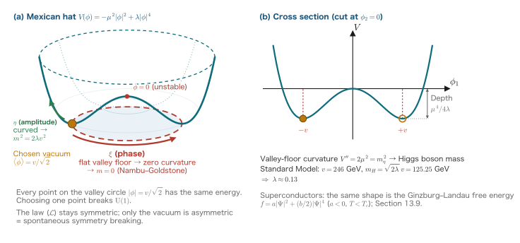
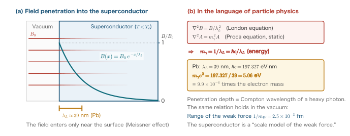

Chapter 13Gauge Theory and Spontaneous Symmetry Breaking
In the preceding chapters we have computed with the Feynman rules as if they had been handed down from above: the QED vertex is $\ii g_e \gamma^\mu$, the QCD vertex is $-\ii g_s \gamma^\mu \lambda^a/2$, and the weak-interaction vertex is $-\ii (g_w/\sqrt8)\gamma^\mu(1-\gamma^5)$. We never answered the question of why they take these forms. This chapter answers it.
In a word, the answer is “local gauge invariance.” We impose on the free Dirac Lagrangian the requirement that the phase transformation $\psi\to\ee^{\ii\theta(x)}\psi$ may be carried out arbitrarily, point by point. From this requirement alone, everything follows: that a vector field $A_\mu$ must exist, how it couples to $\psi$, and that the coupling constant must be the electric charge. QED is not a theory that was “constructed” but one that is “derived” from a symmetry requirement. Generalize this to the non-Abelian group $\mathrm{SU}(3)$ and QCD emerges; generalize it to $\mathrm{SU}(2)\times\mathrm{U}(1)$ and the electroweak theory emerges. The Standard Model of particle physics is, in the end, reduced to a single line of symbols:
$$ \mathrm{SU}(3)_C \times \mathrm{SU}(2)_L \times \mathrm{U}(1)_Y $$nothing more.
This beautiful framework, however, has a fatal side effect. Gauge invariance forbids the mass term $\tfrac12 m^2 A_\mu A^\mu$ for a gauge field. That is fine for the photon and the gluon, which are massless, but as we saw in Chapter 12, the $W$ and $Z$ have enormous masses of $80\,\mathrm{GeV}$ and $91\,\mathrm{GeV}$. Worse, the fermion mass term $m\bar\psi\psi$ also mixes left-handed and right-handed components, so it is not invariant under $\mathrm{SU}(2)_L$, which acts only on the left-handed ones. In other words, in the Standard Model, naively not even the electron can have a mass.
What broke this impasse was the Higgs mechanism, and here we reach the heart of this book. The Higgs mechanism was not invented by particle physicists. It has been at work inside superconductors all along, and it is physics that was understood in the BCS theory of 1957. Yoichiro Nambu translated the concept of “spontaneous symmetry breaking” from the BCS theory into relativistic field theory (1960–61); Anderson saw, in superconductors, that in the presence of a gauge field the Goldstone boson disappears and the photon acquires a mass instead (1963); and it was Englert–Brout, Higgs, and Guralnik–Hagen–Kibble (1964) who formulated this relativistically. The Meissner effect is the acquisition of a mass by the photon inside a superconductor, and the London penetration depth $\lambda_L$ is none other than the (reduced) Compton wavelength $\hbar/(m_\gamma c)$ of that “heavy photon” (in this chapter, from here on, “Compton wavelength” means this reduced Compton wavelength $\hbar/mc$, which is $1/2\pi$ times the ordinary Compton wavelength $h/mc$). The Ginzburg–Landau free functional agrees, term by term, with the Lagrangian of the Abelian Higgs model. The phenomenon in which the phase mode of the superconducting order parameter is pushed up to a plasmon by the long-range Coulomb interaction (Anderson 1963) is precisely the phenomenon of the Nambu–Goldstone boson being “eaten” by the gauge field.
In this chapter we build up the $\Lag$ formalism and the gauge principle in the first half (Sections 13.1–13.5), treat the problem of mass and spontaneous symmetry breaking in the middle (Sections 13.6–13.8), and devote the entire latter half to the connection to materials science (Section 13.9). The aim of this chapter is to show, not by analogy but through a one-to-one correspondence of equations, that superconductivity and the Higgs mechanism are not merely “similar” but “physics of the same structure.” We also state explicitly, each time, where the correspondence breaks down (the stability of topological defects, and the fact that the electroweak transition is a crossover).
- The principle of least action and the Euler–Lagrange equation, and their extension to field theory
- How the corresponding field equations follow from the Klein–Gordon, Dirac, and Proca Lagrangians
- How the Noether current (charge conservation) follows from global $\mathrm{U}(1)$ invariance
- How demanding local $\mathrm{U}(1)$ invariance makes the covariant derivative $D_\mu=\partial_\mu+\ii q A_\mu$ and the gauge field $A_\mu$ appear necessarily, so that the whole of QED is derived
- How, in non-Abelian Yang–Mills theory, a self-interaction term appears in the field strength, giving rise to the three- and four-point gluon couplings
- How a gauge-field mass term breaks gauge invariance, and a fermion mass term breaks chiral symmetry
- The chiral anomaly—how the axial current, conserved classically, ceases to be conserved through quantum corrections, and how this determines the $\pi^0\to\gamma\gamma$ decay width and the “number of colors”—and the condition for the cancellation of gauge anomalies
- The Mexican-hat potential, the vacuum expectation value $v$, and Goldstone’s theorem
- Counting the degrees of freedom in the Higgs mechanism, $2+2=3+1$, the unitary gauge, $m_W=gv/2$, and $m_f=y_f v/\sqrt2$
- That the Ginzburg–Landau theory of superconductivity agrees with the Abelian Higgs model term by term
- The Meissner effect $=$ the photon acquiring a mass, $\lambda_L=1/m_\gamma$, and $m_\gamma c^2\approx 5\ \mathrm{eV}$ for Pb
- The Anderson mechanism (phase mode $\to$ plasmon) and the observation of the Higgs (amplitude) mode by THz spectroscopy
- That the fluctuations of phonons, magnons, and liquid-crystal orientation are all Goldstone bosons
13.1 The Lagrangian Formulation of Classical Mechanics
13.1.1 The principle of least action
Newtonian mechanics starts from “force $=$ mass $\times$ acceleration.” In field theory, however, a different starting point is far more convenient. It is the principle of least action.
Let the coordinate of a point particle be $q(t)$ and its velocity $\dot q(t)$. We define the Lagrangian as the difference between the kinetic energy and the potential energy,
$$ \begin{equation} L(q,\dot q) = T - U = \tfrac12 m\dot q^2 - U(q) \label{eq:13-L-classical} \end{equation} $$and call its time integral the action:
$$ \begin{equation} S[q] = \int_{t_1}^{t_2} L(q,\dot q)\,\dd t \label{eq:13-action} \end{equation} $$The principle of least action
Fix the initial point $q(t_1)=q_1$ and the final point $q(t_2)=q_2$. The motion $q(t)$ that actually occurs is then the path that makes the action $S[q]$ stationary:
$$\delta S = 0 .$$It is customarily called “least,” but strictly speaking it is a stationary value (a minimum, a maximum, or a saddle point are all possible).
Derivation: The Euler–Lagrange equation
Step 1: Deform the path slightly. Consider the path $q(t)+\eta(t)$, obtained by adding a small displacement $\eta(t)$ to the true path $q(t)$. Since the endpoints are fixed,
$$ \eta(t_1)=\eta(t_2)=0 $$holds. It is essential to keep in mind how this condition will matter later.
Step 2: Write the change of the action to first order. Expanding $L(q+\eta,\dot q+\dot\eta)$ in a Taylor series and keeping only the first-order term, we obtain
$$ \delta S = \int_{t_1}^{t_2}\left[\frac{\partial L}{\partial q}\eta + \frac{\partial L}{\partial \dot q}\dot\eta\right]\dd t $$The trouble is that $\eta$ and $\dot\eta$ appear together. We want to eliminate $\dot\eta$.
Step 3: Integrate the second term by parts.
$$ \int_{t_1}^{t_2}\frac{\partial L}{\partial \dot q}\dot\eta\,\dd t = \underbrace{\left[\frac{\partial L}{\partial \dot q}\eta\right]_{t_1}^{t_2}}_{=\,0\ (\text{fixed endpoints})} - \int_{t_1}^{t_2}\frac{\dd}{\dd t}\!\left(\frac{\partial L}{\partial \dot q}\right)\eta\,\dd t $$The boundary term vanishes by the endpoint condition of Step 1. This is the role of fixing the endpoints.
Step 4: Use the arbitrariness of the displacement. Collecting terms,
$$ \delta S = \int_{t_1}^{t_2}\left[\frac{\partial L}{\partial q} - \frac{\dd}{\dd t}\!\left(\frac{\partial L}{\partial \dot q}\right)\right]\eta(t)\,\dd t $$For this to vanish for arbitrary $\eta(t)$, the quantity in the square brackets must vanish identically (the fundamental lemma of the calculus of variations). Therefore
This is the Euler–Lagrange equation.
Step 5: Reproduce Newton’s law. Substituting Eq. \eqref{eq:13-L-classical}, we have $\partial L/\partial\dot q = m\dot q$ and $\partial L/\partial q = -\dd U/\dd q$, so
$$ m\ddot q = -\frac{\dd U}{\dd q} = F $$This is indeed Newton’s equation of motion.
Why the Lagrangian formulation?
Within classical mechanics, the Newtonian and Lagrangian formulations are equivalent. Nevertheless, field theory adopts the latter for three reasons.
- Symmetry becomes visible. $L$ is a scalar. Therefore, merely by writing “$L$ is invariant under the transformation $G$,” we can declare a symmetry of the entire theory. To say the same thing with the equations of motion, we would have to examine individually how each term of the equations transforms.
- Noether’s theorem becomes available. The theorem that each continuous symmetry yields one conserved quantity follows most directly from a symmetry of $L$ (the action) (Section 13.3.1). The same content can also be written in the Hamiltonian formalism, in the form of the commutator $[G,H]=0$ of the generator $G$ of the transformation with $H$ (Chapter 5, Section 5.1), but in field theory it is clearer to start from a symmetry of the action.
- Relativistic invariance becomes manifest. If $L$ is written as a Lorentz scalar, the equations of motion that follow from it are automatically covariant.
Everything in this chapter proceeds by the procedure “write down $\Lag$ $\to$ impose a symmetry $\to$ read off what is allowed.” When a particle physicist proposes a new theory, the first thing written down is always $\Lag$.
13.2 Lagrangians in Field Theory
13.2.1 From the discrete to the continuous
In the mechanics of point particles, the degrees of freedom are a finite number of $q_i(t)$. In field theory, there is a degree of freedom at every point $\xx$ at every time. That is, the dynamical variable becomes $\phi(\xx,t)=\phi(x^\mu)$, a continuous infinity of degrees of freedom. The correspondence is
| Point-particle mechanics | Field theory | |
|---|---|---|
| Dynamical variable | $q_i(t)$ ($i=1,\dots,N$) | $\phi_a(x^\mu)$ ($a$ labels the kind of field) |
| “Velocity” | $\dot q_i$ | $\partial_\mu\phi_a$ (time and space derivatives collectively) |
| Lagrangian | $L(q,\dot q)$ | $L=\int \Lag(\phi,\partial_\mu\phi)\,\dd^3x$ |
| Action | $S=\int L\,\dd t$ | $S=\int \Lag\,\dd^4x$ |
| Fundamental equation | Eq. \eqref{eq:13-EL-classical} | Eq. \eqref{eq:13-EL-field} |
| Dimension ($\hbar=c=1$) | $[L]=$ energy | $[\Lag]=$ energy$^4$ |
$\Lag$ is the Lagrangian density, but in particle physics it is customary to call it simply the “Lagrangian,” and this book follows that practice. It is of decisive importance that the action can be written as a four-dimensional integral, $S=\int\Lag\,\dd^4x$. Since $\dd^4x$ is Lorentz invariant, if $\Lag$ is a Lorentz scalar, then $S$ is automatically a scalar as well.
Derivation: The Euler–Lagrange equation for fields
Step 1: Take the variation. Let $\phi\to\phi+\eta$ (with $\eta$ vanishing at infinity and at the time endpoints). Then
$$ \delta S = \int \dd^4x\left[\frac{\partial\Lag}{\partial\phi}\eta + \frac{\partial\Lag}{\partial(\partial_\mu\phi)}\partial_\mu\eta\right] $$Step 2: Integrate the second term by parts. By the four-dimensional Gauss theorem, the surface term drops out because $\eta\to0$ at infinity:
$$ \int\dd^4x\,\frac{\partial\Lag}{\partial(\partial_\mu\phi)}\partial_\mu\eta = -\int\dd^4x\,\partial_\mu\!\left(\frac{\partial\Lag}{\partial(\partial_\mu\phi)}\right)\eta $$Step 3: Read off the equation from the arbitrariness of the variation.
This has the same form as Eq. \eqref{eq:13-EL-classical} for a point particle, with only the replacements $\dd/\dd t\to\partial_\mu$ and $q\to\phi$. When there are several fields, it holds independently for each field.
13.2.2 The Klein–Gordon Lagrangian
For a real scalar field $\phi(x)$, consider
$$ \begin{equation} \Lag_{\rm KG} = \tfrac12(\partial_\mu\phi)(\partial^\mu\phi) - \tfrac12 m^2\phi^2 \label{eq:13-L-KG} \end{equation} $$The first term is the “kinetic term” and the second is the “mass term.”
Derivation: The Klein–Gordon equation emerges
Step 1: Compute $\partial\Lag/\partial(\partial_\mu\phi)$. Differentiating $(\partial_\nu\phi)(\partial^\nu\phi)=g^{\nu\rho}(\partial_\nu\phi)(\partial_\rho\phi)$ with respect to $\partial_\mu\phi$ gives two terms, one with $\nu=\mu$ and one with $\rho=\mu$, so
$$ \frac{\partial\Lag}{\partial(\partial_\mu\phi)} = \tfrac12\cdot 2\,\partial^\mu\phi = \partial^\mu\phi $$The coefficient $\tfrac12$ is placed there to cancel this factor of 2.
Step 2: Compute $\partial\Lag/\partial\phi$.
$$ \frac{\partial\Lag}{\partial\phi} = -m^2\phi $$Step 3: Substitute into Eq. \eqref{eq:13-EL-field}.
$$ \partial_\mu\partial^\mu\phi + m^2\phi = 0 \qquad\text{that is}\qquad (\Box + m^2)\phi = 0 $$This is the Klein–Gordon equation (Chapter 9, Section 9.1). Note that the sign of the mass term, $-\tfrac12m^2\phi^2$, becomes $+m^2\phi$ in the equation.
For a complex scalar field (a charged spin-0 particle, for example $\pi^\pm$), we regard $\phi$ and $\phi^*$ as independent variables and take
$$ \begin{equation} \Lag = (\partial_\mu\phi)^*(\partial^\mu\phi) - m^2\phi^*\phi \label{eq:13-L-complex} \end{equation} $$The reason the $\tfrac12$ is absent is that, when we decompose $\phi=(\phi_1+\ii\phi_2)/\sqrt2$ into two real fields, each component then takes the standard form of Eq. \eqref{eq:13-L-KG} (Exercise 13.2).
13.2.3 The Dirac Lagrangian
For a spinor field $\psi$, take
$$ \begin{equation} \Lag_{\rm Dirac} = \ii\bar\psi\gamma^\mu\partial_\mu\psi - m\bar\psi\psi = \bar\psi(\ii\slashed\partial - m)\psi \label{eq:13-L-Dirac} \end{equation} $$Here $\bar\psi=\psi^\dagger\gamma^0$ and $\slashed\partial=\gamma^\mu\partial_\mu$. We treat $\psi$ and $\bar\psi$ as independent dynamical variables.
Derivation: The Dirac equation emerges
Step 1: Vary with respect to $\bar\psi$. Since $\Lag$ does not contain $\partial_\mu\bar\psi$, the first term of Eq. \eqref{eq:13-EL-field} is zero. What remains is
$$ \frac{\partial\Lag}{\partial\bar\psi} = \ii\gamma^\mu\partial_\mu\psi - m\psi = 0 $$that is, $(\ii\slashed\partial - m)\psi=0$. This is the Dirac equation (Chapter 9). It comes out in a single line.
Step 2: Vary with respect to $\psi$. This time $\partial_\mu\psi$ appears:
$$ \frac{\partial\Lag}{\partial(\partial_\mu\psi)} = \ii\bar\psi\gamma^\mu,\qquad \frac{\partial\Lag}{\partial\psi} = -m\bar\psi $$ $$ \ii\,\partial_\mu\bar\psi\,\gamma^\mu + m\bar\psi = 0 $$This is the conjugate form of the Dirac equation ($\bar\psi(\ii\overleftarrow{\slashed\partial}+m)=0$ in Chapter 9). From $\psi$ and $\bar\psi$, two mutually conjugate equations emerge properly.
Caution: $\Lag_{\rm Dirac}$ has a “first derivative in the kinetic term”
The Klein–Gordon Lagrangian contains two derivatives ($\partial_\mu\phi\,\partial^\mu\phi$), whereas the Dirac Lagrangian contains only one ($\bar\psi\gamma^\mu\partial_\mu\psi$). This difference comes from the difference in spin. Since the mass dimension of $\Lag$ must be 4, we have $[\phi]=1$ and $[\psi]=3/2$ (for $\bar\psi\psi\partial$, $3/2+3/2+1=4$). This dimension counting is an important tool for deciding which interaction terms are renormalizable (Chapter 8, Section 8.6.4).
13.2.4 The Proca Lagrangian — a massive vector field
For a spin-1 field $A^\mu$, using the field strength $F^{\mu\nu}=\partial^\mu A^\nu-\partial^\nu A^\mu$, take
$$ \begin{equation} \Lag_{\rm Proca} = -\tfrac14 F_{\mu\nu}F^{\mu\nu} + \tfrac12 m^2 A_\nu A^\nu \label{eq:13-L-Proca} \end{equation} $$Derivation: The Proca equation and the constraint imposed by the mass
Step 1: Differentiate the kinetic term. Differentiate $F_{\alpha\beta}F^{\alpha\beta}$ with respect to $\partial_\mu A_\nu$. $F_{\alpha\beta}=\partial_\alpha A_\beta-\partial_\beta A_\alpha$ contains $\partial_\mu A_\nu$ in two ways, for $(\alpha\beta)=(\mu\nu)$ and $(\nu\mu)$, and by the antisymmetry of $F$ the two give the same contribution. As a result,
$$ \frac{\partial}{\partial(\partial_\mu A_\nu)}\left(-\tfrac14F_{\alpha\beta}F^{\alpha\beta}\right) = -F^{\mu\nu} $$Step 2: Differentiate the mass term.
$$ \frac{\partial}{\partial A_\nu}\left(\tfrac12 m^2A_\alpha A^\alpha\right) = m^2A^\nu $$Step 3: Insert into Eq. \eqref{eq:13-EL-field}.
For $m=0$ this is $\partial_\mu F^{\mu\nu}=0$, that is, the Maxwell equations in vacuum.
Step 4: A mass enforces the Lorenz condition. Apply $\partial_\nu$ to Eq. \eqref{eq:13-Proca}. Since $F^{\mu\nu}$ is antisymmetric and $\partial_\mu\partial_\nu$ is symmetric, the first term vanishes identically:
$$ \underbrace{\partial_\nu\partial_\mu F^{\mu\nu}}_{=\,0} + m^2\,\partial_\nu A^\nu = 0 \quad\Longrightarrow\quad m^2\,(\partial\!\cdot\!A)=0 $$If $m\neq0$, then $\partial_\nu A^\nu=0$ follows from the equation itself. This is not gauge fixing but a consequence of the theory. Eq. \eqref{eq:13-Proca} then becomes $(\Box+m^2)A^\nu=0$.
Step 5: Count the degrees of freedom. $A^\nu$ has four components. One constraint, $\partial\!\cdot\!A=0$, is imposed on them, so the number of independent components is $4-1=3$. That is, a massive vector particle has three polarizations (longitudinal, $\lambda=0$, and transverse, $\lambda=\pm1$). On the other hand, for $m=0$ the gauge freedom $A_\mu\to A_\mu+\partial_\mu\chi$ removes one further degree of freedom, leaving $4-1-1=2$ (transverse polarizations only). This difference between $3$ and $2$ plays the leading role in the counting of degrees of freedom in Section 13.8.
Physical Meaning: The Proca field produces the Yukawa potential
Let us find the $A^0$ produced by a static point charge $\rho=g\delta^3(\xx)$ from Eq. \eqref{eq:13-Proca} (placing the source term on the right-hand side):
$$ (-\nabla^2 + m^2)A^0 = g\,\delta^3(\xx) \quad\Longrightarrow\quad A^0(r) = \frac{g}{4\pi}\frac{\ee^{-mr}}{r} $$For $m\to0$ this is the Coulomb potential $g/4\pi r$; for $m\neq0$ it is cut off exponentially at the distance $1/m$. This is the formula with which Yukawa estimated the meson mass from the range of the nuclear force (Chapter 2).
And as we shall see in Section 13.9, this exponential screening is precisely the Meissner effect in a superconductor. A superconductor is a medium that gives the photon a Proca mass.
13.3 Local Gauge Invariance — How QED Is Born
13.3.1 Global U(1) invariance and the Noether current
The Dirac Lagrangian \eqref{eq:13-L-Dirac} is invariant under the constant-phase transformation
$$ \begin{equation} \psi \to \psi' = \ee^{\ii\theta}\psi,\qquad \bar\psi\to\bar\psi' = \ee^{-\ii\theta}\bar\psi \qquad(\theta=\text{constant}) \label{eq:13-global-u1} \end{equation} $$Indeed, $\bar\psi'\psi'=\bar\psi\ee^{-\ii\theta}\ee^{\ii\theta}\psi=\bar\psi\psi$ and $\bar\psi'\gamma^\mu\partial_\mu\psi'=\bar\psi\gamma^\mu\partial_\mu\psi$, so the phase factors cancel cleanly. Since $\ee^{\ii\theta}$ is a $1\times1$ unitary matrix, the group of this symmetry is $\mathrm{U}(1)$. This is called global $\mathrm{U}(1)$ invariance. It is “global” because the same $\theta$ is used throughout all of spacetime.
Derivation: Noether current and charge conservation
Step 1: Write down the infinitesimal transformation. For $\theta\ll1$ we have $\ee^{\ii\theta}\approx1+\ii\theta$, so
$$ \delta\psi = \ii\theta\,\psi,\qquad \delta\bar\psi = -\ii\theta\,\bar\psi $$Step 2: Compute the variation of $\Lag$ directly. By the chain rule,
$$ \delta\Lag = \frac{\partial\Lag}{\partial\psi}\delta\psi + \frac{\partial\Lag}{\partial(\partial_\mu\psi)}\delta(\partial_\mu\psi) + (\psi\to\bar\psi \text{ terms}) $$Step 3: Use the equations of motion. Substitute the Euler–Lagrange equation $\partial\Lag/\partial\psi=\partial_\mu[\partial\Lag/\partial(\partial_\mu\psi)]$ into the first term and use $\delta(\partial_\mu\psi)=\partial_\mu(\delta\psi)$; the two terms then combine into the derivative of a product:
$$ \delta\Lag = \partial_\mu\!\left[\frac{\partial\Lag}{\partial(\partial_\mu\psi)}\delta\psi\right] + (\bar\psi\text{ terms}) $$Step 4: Impose the symmetry. By assumption $\delta\Lag=0$, so the quantity inside the square brackets is a conserved current. Substitute $\partial\Lag/\partial(\partial_\mu\psi)=\ii\bar\psi\gamma^\mu$; the $\bar\psi$ terms vanish because they contain no $\partial_\mu\bar\psi$:
$$ \partial_\mu\!\left[\ii\bar\psi\gamma^\mu\cdot\ii\theta\psi\right] = 0 \quad\Longrightarrow\quad \partial_\mu(\bar\psi\gamma^\mu\psi) = 0 $$Step 5: Read it as an electric current. Multiplying by the charge $q$,
This is exactly the electromagnetic current that we introduced without justification in Chapter 9. Integrating $\partial_\mu j^\mu=0$ over space gives $\dd Q/\dd t=0$, that is, charge conservation.
Noether’s theorem (restated from Chapter 5)
To each continuous symmetry of $\Lag$ there corresponds one conserved current $j^\mu$ ($\partial_\mu j^\mu=0$) and one conserved charge $Q=\int j^0\,\dd^3x$.
Global $\mathrm{U}(1)$ $\Rightarrow$ charge conservation. Spacetime translations $\Rightarrow$ energy-momentum conservation. Spatial rotations $\Rightarrow$ angular-momentum conservation. $\mathrm{SU}(3)_C$ $\Rightarrow$ color charge conservation.
13.3.2 Wanting to vary the phase from place to place
Why demand “local” invariance?
The overall phase of a wave function does not enter any observation. The angle $\theta$ appears neither in $\abs{\psi}^2$ nor in $\bar\psi\gamma^\mu\psi$. Then the “reference for the phase” is a mere convention with no bearing on physics.
Yet Eq. \eqref{eq:13-global-u1} allows us only to change that convention simultaneously throughout the entire universe. If we shift the origin of the phase in Tokyo, we must shift it by the same amount in the Andromeda Galaxy at the same time. This runs against the spirit of relativity (locality). If it is a convention with no bearing on physics, should it not be possible to choose it freely at each point? That is, we demand that $\Lag$ be invariant also under the local transformation
$$ \psi(x)\to\ee^{\ii\theta(x)}\psi(x) $$This is the gauge principle.
This is not a logical necessity but a postulate adopted by physicists. Yet the whole of electromagnetism emerges from this postulate. We see this in the next subsection.
Derivation: The covariant derivative and the gauge field arise from local U(1)
Step 1: See what breaks. Under $\psi\to\ee^{\ii\theta(x)}\psi$, the mass term $-m\bar\psi\psi$ is still invariant (the phases cancel). The problem is the derivative term. By the product rule,
$$ \partial_\mu\psi \;\to\; \partial_\mu\!\left(\ee^{\ii\theta(x)}\psi\right) = \ee^{\ii\theta(x)}\!\left[\partial_\mu\psi + \ii(\partial_\mu\theta)\psi\right] $$An extra term $\partial_\mu\theta$ appears. Therefore
$$ \Lag \;\to\; \Lag - \bar\psi\gamma^\mu\psi\,(\partial_\mu\theta) $$and $\Lag$ is not invariant.
Step 2: Introduce a field that cancels the remainder. To eliminate this extra term, we have no choice but to add something that transforms in exactly the opposite way. We therefore introduce a vector field $A_\mu(x)$ and add to $\Lag$ the interaction term
$$ \Lag_{\rm int} = -q\,\bar\psi\gamma^\mu\psi\,A_\mu $$If we then assume that $A_\mu$ transforms as
$$ \begin{equation} A_\mu \;\to\; A_\mu - \frac{1}{q}\partial_\mu\theta \label{eq:13-gauge-tr} \end{equation} $$the change of $\Lag_{\rm int}$ is $+\bar\psi\gamma^\mu\psi(\partial_\mu\theta)$, which exactly cancels the remainder from Step 1.
Step 3: Package it as a covariant derivative. The operation of Step 2 is equivalent to replacing the derivative by
Indeed,
$$ \Lag = \bar\psi(\ii\gamma^\mu D_\mu - m)\psi = \underbrace{\bar\psi(\ii\gamma^\mu\partial_\mu-m)\psi}_{\text{free term}} \;\underbrace{-\;q\,\bar\psi\gamma^\mu\psi A_\mu}_{\text{interaction term}} $$We call $D_\mu$ the covariant derivative. “Covariant” means that $D_\mu\psi$ transforms in the same way as $\psi$ itself:
$$ D_\mu\psi \;\to\; \ee^{\ii\theta(x)}\,D_\mu\psi $$Step 4: Check it. Apply $D'_\mu=\partial_\mu+\ii qA'_\mu = \partial_\mu+\ii qA_\mu - \ii\partial_\mu\theta$ to $\ee^{\ii\theta}\psi$:
$$ \begin{aligned} D'_\mu(\ee^{\ii\theta}\psi) &= \ee^{\ii\theta}\!\left[\partial_\mu\psi + \ii(\partial_\mu\theta)\psi\right] + \ii qA_\mu\ee^{\ii\theta}\psi - \ii(\partial_\mu\theta)\ee^{\ii\theta}\psi\\[2pt] &= \ee^{\ii\theta}\!\left[\partial_\mu\psi + \ii qA_\mu\psi\right] = \ee^{\ii\theta}\,D_\mu\psi \end{aligned} $$The $\partial_\mu\theta$ terms have cancelled. We have shown that $\Lag=\bar\psi(\ii\gamma^\mu D_\mu-m)\psi$ is invariant under local $\mathrm{U}(1)$.
Step 5: Give $A_\mu$ a kinetic term as well. For $A_\mu$ to be a dynamical degree of freedom (that is, a particle), a term containing $\partial A$ is needed. Moreover, it must be invariant under the gauge transformation \eqref{eq:13-gauge-tr}. Forming $F_{\mu\nu}=\partial_\mu A_\nu-\partial_\nu A_\mu$, we find
$$ F_{\mu\nu}\to \partial_\mu\!\left(A_\nu-\tfrac1q\partial_\nu\theta\right)-\partial_\nu\!\left(A_\mu-\tfrac1q\partial_\mu\theta\right) = F_{\mu\nu} - \tfrac1q\underbrace{(\partial_\mu\partial_\nu-\partial_\nu\partial_\mu)\theta}_{=\,0} = F_{\mu\nu} $$$F_{\mu\nu}$ is gauge-invariant (because derivatives commute). Therefore we may add $-\tfrac14F_{\mu\nu}F^{\mu\nu}$.
Step 6: Survey the completed theory.
This is all of the Lagrangian of quantum electrodynamics.
Consequences of the gauge principle — QED is a derived theory
From the single postulate of “local $\mathrm{U}(1)$ invariance of the free Dirac field,” all of the following emerged.
- A gauge field $A_\mu$ must exist. Without it we cannot construct the theory. This is the reason for the photon’s existence.
- That field must be massless. Under Eq. \eqref{eq:13-gauge-tr}, $\tfrac12m^2A_\mu A^\mu$ becomes $\tfrac12m^2(A_\mu-\tfrac1q\partial_\mu\theta)(A^\mu-\tfrac1q\partial^\mu\theta)\neq\tfrac12m^2A_\mu A^\mu$, which is not invariant. This is why the photon is exactly massless (Section 13.6).
- The form of the coupling is restricted to $-q\bar\psi\gamma^\mu\psi A_\mu$. By the rule of Step 1 in Section 13.5.1 (strip the fields from the interaction term and multiply by $\ii$), the vertex factor in the Feynman rules is $-\ii q\gamma^\mu$. For the electron $q=-g_e$, so this becomes $\ii g_e\gamma^\mu$, which agrees with the vertex factor given in Chapter 10. This is the answer to “Why is the vertex $\gamma^\mu$?”
- The coupling constant is the coefficient of the current \eqref{eq:13-noether}, that is, the charge $q$ itself. The photon couples equally to all charged particles, in proportion to their charges (universality of the coupling). This is half of the answer to the question of why the magnitudes of the electron and proton charges are exactly equal.
Connection to Materials Science: The covariant derivative is the Peierls substitution
When treating a tight-binding model in a magnetic field in solid-state physics, one attaches a phase factor to the hopping integral:
$$ \begin{equation} t_{ij} \;\longrightarrow\; t_{ij}\, \exp\!\left[\ii\frac{q}{\hbar}\int_{\bm{R}_j}^{\bm{R}_i}\bm{A}\cdot\dd\bm{l}\right] \label{eq:13-peierls} \end{equation} $$($q$ is the charge of the hopping particle; for the electron $q=-e$ with $e>0$). This is called the Peierls substitution. The Hofstadter butterfly, the lattice version of Landau levels, flux quantization, and the implementation of magnetic-field response in first-principles calculations all start from this formula.
Equation \eqref{eq:13-peierls} is precisely the lattice version of the covariant derivative \eqref{eq:13-covD}. The reason is that the operator that “translates” the phase of the wave function at $\bm{R}_j$ into the phase reference at $\bm{R}_i$ is $\exp[\ii q\int A\cdot\dd l]$ (in lattice gauge theory this is called the link variable $U_{ij}$). Indeed, if $\bm{R}_i$ and $\bm{R}_j$ are close,
$$ \ee^{\ii q\int A\cdot\dd l}\psi(\bm{R}_j) \approx \psi(\bm{R}_i) - a\,(\partial_x - \ii qA_x)\psi = \psi(\bm{R}_i) - a\,D_x\psi $$expands as shown, and the covariant derivative appears (we took $a=\abs{\bm{R}_i-\bm{R}_j}$ and $\bm{R}_j=\bm{R}_i-a\hat{\bm x}$). Here $D_x$ is the spatial component of $D_\mu=\partial_\mu+\ii qA_\mu$, and the spatial components with lower indices have the opposite sign from the three-vector ($A_i=-A^i=-(\bm A)_i$), so $D_x=\partial_x-\ii q(\bm A)_x$.
Moreover, the phase that remains after going once around a closed plaquette, $\oint\bm{A}\cdot\dd\bm{l}=\Phi$ (the enclosed magnetic flux), is precisely $F_{\mu\nu}$, the “curvature” of the gauge field. The Aharonov–Bohm effect and flux quantization are both manifestations of the fact that this around-the-loop phase is an observable. A gauge field is a connection that makes it possible to compare phases at neighboring points, and its curvature is the magnetic field. This structure is entirely common to particle physics and solid-state physics.
Math Note: The Berry connection is also a gauge field
When the parameter $\kk$ is moved adiabatically, the phase of the Bloch state $\ket{u_n(\kk)}$ can be chosen arbitrarily at each $\kk$ ($\ket{u_n}\to\ee^{\ii\varphi(\kk)}\ket{u_n}$). This is exactly a local $\mathrm{U}(1)$ degree of freedom. If we therefore define
$$ \bm{\mathcal{A}}_n(\kk) = \ii\braket{u_n(\kk)\,|\,\nabla_\kk\,|\,u_n(\kk)}, \qquad \bm{\Omega}_n = \nabla_\kk\times\bm{\mathcal{A}}_n $$then $\bm{\mathcal{A}}_n$ (the Berry connection) undergoes the gauge transformation $\bm{\mathcal{A}}_n\to\bm{\mathcal{A}}_n-\nabla_\kk\varphi$, while $\bm{\Omega}_n$ (the Berry curvature) is gauge-invariant. This is the same structure as $F_{\mu\nu}$. That the Chern number $C=\frac{1}{2\pi}\int_{\rm BZ}\Omega\,\dd^2k$ is an integer has the same topological origin as flux quantization.
For degenerate bands the phase becomes a $\mathrm{U}(N)$ matrix, and the Berry connection becomes matrix-valued, that is, a non-Abelian gauge field (the Wilczek–Zee connection). It is mathematically identical to the Yang–Mills theory of the next section. The anomalous Hall effect, topological insulators, and the modern theory of polarization (Berry phase theory) are all written in this language. As a review of Berry phases in solids, D. Xiao, M.-C. Chang, Q. Niu, Rev. Mod. Phys. 82, 1959 (2010) is good, and it is worth reading alongside this section.
13.4 Yang–Mills Theory — Non-Abelian Gauge Fields
13.4.1 Arranging several fields in a column
In Section 13.3 we rotated the phase of a one-component field $\psi$. Now consider $n$ fields arranged in a column,
$$ \Psi = \begin{pmatrix}\psi_1\\ \vdots\\ \psi_n\end{pmatrix} $$and the transformation $\Psi\to U\Psi$ that mixes them by an $n\times n$ unitary matrix $U$. If we restrict to $\det U=1$, the group is $\mathrm{SU}(n)$. For $n=2$ this is the weak-isospin doublet ($\nu_e,e$) or ($u,d$); for $n=3$ it is the color triplet of quarks (red, green, blue).
If the masses are equal, $\Lag=\bar\Psi(\ii\slashed\partial-m)\Psi$ is invariant when $U$ is a constant ($\bar\Psi U^\dagger U\Psi=\bar\Psi\Psi$). Demanding localization $U=U(x)$ here as well is the idea of Yang–Mills (1954).
Generators of SU(n)
Write $U=\exp[\ii\,\theta^a(x)T^a]$ ($a=1,\dots,n^2-1$, summed over). The $T^a$ are the generators, which are Hermitian, traceless $n\times n$ matrices (Chapter 5).
- $\mathrm{SU}(2)$: $T^a=\tau^a/2$ ($\tau^a$ are the Pauli matrices); there are three generators
- $\mathrm{SU}(3)$: $T^a=\lambda^a/2$ ($\lambda^a$ are the Gell-Mann matrices); there are eight generators
The commutation relation determines the content of the theory:
$$ \begin{equation} [T^a,T^b] = \ii f^{abc}T^c \label{eq:13-lie} \end{equation} $$The $f^{abc}$ are called the structure constants. For $\mathrm{SU}(2)$, $f^{abc}=\varepsilon^{abc}$; for $\mathrm{SU}(3)$, $f^{123}=1$, $f^{147}=\tfrac12$, and so on (for a list of the Gell-Mann matrices and structure constants, see Chapter 11, Section 11.3.2). For $\mathrm{U}(1)$ there is only one generator, so $f^{abc}=0$; that is, the group is Abelian. This difference makes all the difference.
Derivation: Transformation law of a non-Abelian gauge field
Step 1: Demand a covariant derivative. As in Section 13.3, introduce gauge fields $A^a_\mu$ (one for each generator) and set
$$ \begin{equation} D_\mu = \partial_\mu + \ii g\,A^a_\mu T^a \equiv \partial_\mu + \ii g\,\mathbb{A}_\mu \label{eq:13-covD-nonabelian} \end{equation} $$Here $\mathbb{A}_\mu\equiv A^a_\mu T^a$ is a matrix. The requirement is
$$ D_\mu\Psi \to U(D_\mu\Psi) $$Step 2: Write down the condition. With $D'_\mu=\partial_\mu+\ii g\mathbb{A}'_\mu$, we have
$$ (\partial_\mu + \ii g\mathbb{A}'_\mu)U\Psi = U(\partial_\mu+\ii g\mathbb{A}_\mu)\Psi $$The first term on the left-hand side is $(\partial_\mu U)\Psi + U\partial_\mu\Psi$. Since $U\partial_\mu\Psi$ cancels on both sides,
$$ (\partial_\mu U) + \ii g\mathbb{A}'_\mu U = \ii g\,U\mathbb{A}_\mu $$Step 3: Solve for $\mathbb{A}'_\mu$. Multiplying by $U^{-1}$ from the right gives
The second term is the “inhomogeneous term” corresponding to $-\tfrac1q\partial_\mu\theta$ of $\mathrm{U}(1)$. What is new is the first term: for an Abelian group $U\mathbb{A}U^{-1}=\mathbb{A}$, but for a non-Abelian group $\mathbb{A}_\mu$ itself undergoes a rotation. That is, the gauge field itself carries a charge, transforming under the adjoint representation of the group. This is why gluons carry color charge.
Step 4: Infinitesimal form. Setting $U\approx1+\ii\theta^aT^a$ and expanding to first order, we obtain
$$ A^a_\mu \to A^a_\mu - \frac1g\partial_\mu\theta^a - f^{abc}\theta^b A^c_\mu $$The last term is the effect of non-Abelianity.
13.4.2 Field strength and self-interaction
Derivation: The appearance of nonlinear terms in $F^a_{\mu\nu}$
Step 1: The naive definition does not work. Even if we form $\partial_\mu A^a_\nu-\partial_\nu A^a_\mu$, it does not transform simply, because of the first term of Eq. \eqref{eq:13-YM-gauge-tr}. So, following the lesson of geometry, we define the field strength through the commutator of covariant derivatives:
$$ \mathbb{F}_{\mu\nu} \equiv \frac{1}{\ii g}\left[D_\mu,\,D_\nu\right] $$With this definition, $D_\mu\to UD_\mu U^{-1}$ implies $\mathbb{F}_{\mu\nu}\to U\mathbb{F}_{\mu\nu}U^{-1}$, so the transformation law is guaranteed to be simple (the adjoint representation).
Step 2: Compute the commutator. Letting it act on $\Psi$, the commutator of the $\partial_\mu$ with one another vanishes, and the cross terms and the terms of $\mathbb{A}$ with one another remain:
$$ [D_\mu,D_\nu] = \ii g(\partial_\mu\mathbb{A}_\nu - \partial_\nu\mathbb{A}_\mu) + (\ii g)^2[\mathbb{A}_\mu,\mathbb{A}_\nu] $$Therefore
$$ \mathbb{F}_{\mu\nu} = \partial_\mu\mathbb{A}_\nu - \partial_\nu\mathbb{A}_\mu + \ii g[\mathbb{A}_\mu,\mathbb{A}_\nu] $$Step 3: Rewrite in components. Substituting $[\mathbb{A}_\mu,\mathbb{A}_\nu]=A^b_\mu A^c_\nu[T^b,T^c]=\ii f^{bca}A^b_\mu A^c_\nu T^a$ and using $\ii\cdot\ii=-1$, we obtain
The third term is the heart of Yang–Mills theory. For $\mathrm{U}(1)$, $f^{abc}=0$, so this term is absent.
Derivation: Origin of the three-point and four-point couplings
The Yang–Mills kinetic term is
$$ \Lag_{\rm YM} = -\tfrac14 F^a_{\mu\nu}F^{a\,\mu\nu} $$(writing it as $-\tfrac14\cdot 2\,\Tr[\mathbb{F}\mathbb{F}]$ gives the same thing, using $\Tr[T^aT^b]=\tfrac12\delta^{ab}$). Let us substitute Eq. \eqref{eq:13-F-YM} and separate the result term by term. Writing $F^a_{\mu\nu}=\underbrace{\partial_\mu A^a_\nu-\partial_\nu A^a_\mu}_{\displaystyle f^a_{\mu\nu}}\;-\;g f^{abc}A^b_\mu A^c_\nu$, we have
$$ -\tfrac14 F^aF^a = \underbrace{-\tfrac14 f^a_{\mu\nu}f^{a\,\mu\nu}}_{(\rm i)} \;\underbrace{+\;\tfrac{g}{2}f^{abc}\,f^{a\,\mu\nu}A^b_\mu A^c_\nu}_{(\rm ii)} \;\underbrace{-\;\tfrac{g^2}{4}f^{abc}f^{ade}A^b_\mu A^c_\nu A^{d\,\mu}A^{e\,\nu}}_{(\rm iii)} $$- (i) Quadratic term: two $A$'s. This is the kinetic term of a free massless vector field, and it gives the propagator.
- (ii) Cubic term: three $A$'s (one of them differentiated). This is the three-gluon vertex. The coupling constant is $g$, and because of the derivative, momenta appear in the vertex factor.
- (iii) Quartic term: four $A$'s. This is the four-gluon vertex. The coupling constant is $g^2$.
That is, gluons couple directly to each other. Photons do not couple to each other (classically). This single point sharply distinguishes the properties of QCD from those of QED.
Physical Meaning: Self-interaction gives rise to asymptotic freedom and confinement
In the $\beta$ function we saw in Chapter 11, Section 11.6,
$$ \beta(g_s) = -\frac{g_s^3}{16\pi^2}\left(11 - \tfrac23 n_f\right) $$the number $11$ is precisely the contribution from the gluon self-interaction (the three-point and four-point vertices), and $-\tfrac23n_f$ is the contribution from quark loops. Even with six quark flavors, $11-4=7>0$, so $\beta<0$; that is, the coupling becomes weaker at high energies (asymptotic freedom).
In QED there is no photon self-coupling, so there is no corresponding $11$; $\beta>0$, and the coupling becomes stronger at higher energies (as a rough on-shell figure, $\alpha(m_Z)\simeq1/129$, which is larger than $\alpha(0)=1/137$; Chapter 10, Section 10.6.4).
Conversely, at low energies $g_s$ diverges and the color lines of force are bundled into a thin tube (confinement). Because gluons carry color charge and attract each other, the lines of force do not spread out. In the end, the root of the existence of hadrons, and therefore of atomic nuclei and of matter, lies in the third term of Eq. \eqref{eq:13-F-YM}.
Caution: Conventions for the sign and the coupling constant
Both $D_\mu=\partial_\mu+\ii gA^a_\mu T^a$ and $D_\mu=\partial_\mu-\ii gA^a_\mu T^a$ are widely used. If one adopts the former, the nonlinear term of $F^a_{\mu\nu}$ is $-gf^{abc}A^bA^c$; with the latter it is $+gf^{abc}A^bA^c$. This book, in agreement with Eq. \eqref{eq:13-covD}, adopts the former (the $+$ sign) throughout all chapters. Griffiths writes $\mathcal D_\mu=\partial_\mu+\ii\frac{q}{\hbar c}\bm\tau\cdot\bm A_\mu$; the sign is the same as the former, but it differs from this book in that the normalization of the generators does not include the factor $1/2$ and the coupling constant is written $q$. Physical quantities (cross sections, decay rates) do not depend on the convention. When reading the literature, it is a good habit to check the sign of the covariant derivative first.
13.5 The Lagrangian of Chromodynamics and the Feynman Rules
13.5.1 The Lagrangian of QCD
We apply the framework of Section 13.4 to $\mathrm{SU}(3)_C$ (color). The quark field is a color triplet
$$ q_f = \begin{pmatrix} q_f^{\rm red}\\ q_f^{\rm green}\\ q_f^{\rm blue}\end{pmatrix}, \qquad f = u,d,s,c,b,t $$the generators are $T^a=\lambda^a/2$ ($a=1,\dots,8$), and the structure constants are the $f^{abc}$ of $\mathrm{SU}(3)$. The resulting Lagrangian is
That is all. Apart from the quark masses $m_f$ and the single coupling constant $g_s$ (or $\alpha_s=g_s^2/4\pi$), there are no arbitrary parameters. All the Feynman rules used in Chapter 11 can be read off from here.
Derivation: Reading the Feynman rules from the Lagrangian
Step 1: Read the vertices off the interaction terms. The general rule is: “remove the fields from a term of $\Lag_{\rm int}$, multiply by $\ii$, and multiply by the symmetry factor (the number of ways of exchanging identical fields).”
Step 2: The quark–gluon vertex. Expanding the first term of Eq. \eqref{eq:13-L-QCD} gives
$$ \Lag \supset -g_s\,\bar q_f\gamma^\mu\frac{\lambda^a}{2}q_f\,A^a_\mu $$Removing the fields $\bar q,q,A$ and multiplying by $\ii$ gives the vertex factor
$$ -\ii g_s\,\gamma^\mu\frac{\lambda^a}{2} $$This agrees with the one given in Chapter 11, Section 11.3 (note that the color factor $\lambda^a/2$ and the spinor part $\gamma^\mu$ are separated).
Step 3: The three-gluon vertex. From (ii) of Section 13.4.2, for three gluons $(a\mu),(b\nu),(c\rho)$ with momenta $k_1,k_2,k_3$ (all incoming), we have
$$ -g_s f^{abc}\left[ g^{\mu\nu}(k_1-k_2)^\rho + g^{\nu\rho}(k_2-k_3)^\mu + g^{\rho\mu}(k_3-k_1)^\nu \right] $$The momenta appear from the derivatives $\partial_\mu\to-\ii k_\mu$, and summing over the three ways of assigning the fields gives this form, which is totally antisymmetric in the indices.
Step 4: The four-gluon vertex. From (iii) of Section 13.4.2,
$$ \begin{aligned} -\ii g_s^2\big[&f^{abe}f^{cde}(g^{\mu\rho}g^{\nu\sigma}-g^{\mu\sigma}g^{\nu\rho})\\ +\;&f^{ace}f^{bde}(g^{\mu\nu}g^{\rho\sigma}-g^{\mu\sigma}g^{\nu\rho})\\ +\;&f^{ade}f^{bce}(g^{\mu\nu}g^{\rho\sigma}-g^{\mu\rho}g^{\nu\sigma})\big] \end{aligned} $$Note that the coupling constant is $g_s^2$, that is, first order in $\alpha_s$. The three-point vertex goes as $g_s$ and the four-point vertex as $g_s^2$, so both contribute to diagrams of the same order in $\alpha_s$.
Step 5: Propagators. From the quadratic terms, the gluon propagator with momentum $k$ is (in Feynman gauge)
$$ \frac{-\ii g_{\mu\nu}\delta^{ab}}{k^2 + \ii\epsilon} $$The factor $\delta^{ab}$ says that the color index is conserved. Since there is no mass term, the pole is at $k^2=0$. The quark propagator is $\dfrac{\ii(\slashed k+m_f)\delta_{ij}}{k^2-m_f^2+\ii\epsilon}$.
| QED | QCD | Electroweak theory | |
|---|---|---|---|
| Gauge group | $\mathrm{U}(1)_{\rm em}$ | $\mathrm{SU}(3)_C$ | $\mathrm{SU}(2)_L\times\mathrm{U}(1)_Y$ |
| Number of generators | 1 | 8 | $3+1=4$ |
| Gauge fields | $\gamma$ (1) | gluons (8) | $W^\pm,Z^0,\gamma$ (4) |
| Commutativity | Abelian ($f^{abc}=0$) | non-Abelian | non-Abelian |
| Self-coupling | none | three- and four-point | $WWZ$, $WW\gamma$, $WWWW$, etc. |
| Charge | electric charge $q$ | color charge (three colors) | weak isospin $T^3$, hypercharge $Y$ |
| Running of the coupling | $\beta>0$ (stronger at high energy) | $\beta<0$ (asymptotic freedom) | $\beta<0$ ($\mathrm{SU}(2)$ part) |
| Gauge-field mass | $0$ | $0$ | $m_W=80.377\ \mathrm{GeV}$, $m_Z=91.188\ \mathrm{GeV}$ |
| State of the symmetry | exactly preserved | exactly preserved | spontaneously broken (Section 13.8) |
Note: The mass values throughout this book follow PDG 2022 ($m_W=80.377$, $m_Z=91.188$, $m_H=125.25\ \mathrm{GeV}$). In PDG 2024 they change slightly to $m_W=80.369$ and $m_H=125.20\ \mathrm{GeV}$, but within the number of significant figures used in the discussion of this chapter, the conclusions do not change.
The last two rows of Table 13.2 are the subject of the second half of this chapter. In QED and QCD the gauge symmetry is exactly preserved, and the gauge fields may remain massless. In the electroweak theory, however, this is not possible.
13.6 The Problem of Mass Terms
13.6.1 A mass term for a gauge field breaks gauge invariance
A mass term cannot be written for a gauge field
Under the gauge transformation $A_\mu\to A_\mu-\tfrac1q\partial_\mu\theta$,
$$ \tfrac12 m^2 A_\mu A^\mu \;\to\; \tfrac12 m^2 A_\mu A^\mu - \frac{m^2}{q}A^\mu\partial_\mu\theta + \frac{m^2}{2q^2}(\partial_\mu\theta)(\partial^\mu\theta) $$Since the second and third terms remain, the term is not gauge-invariant if $m\neq0$. The same holds in the non-Abelian case (because of the inhomogeneous transformation of $\mathbb{A}_\mu$).
Why is this so serious?
One might think, “Why not simply give up gauge invariance?” But gauge invariance is not a mere matter of aesthetics; it underpins the consistency of the theory.
- Renormalizability. As 't Hooft and Veltman (1971; Nobel Prize 1999) showed, a gauge-invariant theory confines the divergences of loop calculations to a finite number of constants, but this fails in a theory in which a mass term has been put by hand into a non-Abelian gauge field. Coupling an Abelian Proca field to a conserved current (QED with a mass term put in by hand) is an exceptional case that is renormalizable, but $\mathrm{SU}(2)_L$, to which $W,Z$ belong, is non-Abelian, so this loophole is not available.
- Unitarity. The longitudinal polarization vector of a massive vector particle diverges at high energy as $\epsilon^\mu_L\approx k^\mu/m$. The scattering amplitude of $W_LW_L\to W_LW_L$ grows naively with energy as $\mathcal{M}\sim G_F s$, and the probability exceeds 1 at $\sqrt s\sim1.2\ \mathrm{TeV}$. Without a mechanism by which the exchange of the Higgs boson cancels this growth, the theory would break down.
- Experiment. Nevertheless, $W$ and $Z$ are heavy: $m_W=80.377\ \mathrm{GeV}$ and $m_Z=91.188\ \mathrm{GeV}$. This is why the range of the weak interaction, $1/m_W\approx 2.5\times10^{-3}\ \mathrm{fm}$, is extremely short (Chapter 12).
The Higgs mechanism answers the seemingly contradictory demand to “give the gauge field a mass while preserving gauge invariance.”
13.6.2 A fermion mass term breaks chiral symmetry
The problem is not only with gauge fields. Using the chirality projection operators of the Dirac field (Chapter 9)
$$ P_L = \frac{1-\gamma^5}{2},\qquad P_R = \frac{1+\gamma^5}{2}, \qquad \psi_L = P_L\psi,\quad \psi_R=P_R\psi $$we rewrite the Dirac Lagrangian.
Derivation: Only the mass term mixes left and right
Step 1: Rewrite $\bar\psi_L$. $\gamma^5$ is Hermitian and $\{\gamma^5,\gamma^\mu\}=0$; hence, from $\gamma^0\gamma^5=-\gamma^5\gamma^0$,
$$ \bar\psi_L = (P_L\psi)^\dagger\gamma^0 = \psi^\dagger P_L\gamma^0 = \psi^\dagger\gamma^0 P_R = \bar\psi P_R $$That is, “putting on the bar swaps left and right.” Similarly, $\bar\psi_R=\bar\psi P_L$.
Step 2: Decompose the mass term. Using $P_L+P_R=1$, $P_L^2=P_L$, and $P_LP_R=0$, we obtain
$$ \bar\psi\psi = \bar\psi(P_L+P_R)\psi = \bar\psi P_L\psi + \bar\psi P_R\psi = \bar\psi_R\psi_L + \bar\psi_L\psi_R $$(We used $\bar\psi_R\psi_L=\bar\psi P_LP_L\psi=\bar\psi P_L\psi$.) The mass term always connects the left-handed and right-handed fields. Indeed, $\bar\psi_L\psi_L=\bar\psi P_RP_L\psi=0$.
Step 3: Decompose the kinetic term. This time $\gamma^\mu$ sits in between. Using $P_R\gamma^\mu=\gamma^\mu P_L$, we obtain
$$ \bar\psi\gamma^\mu\partial_\mu\psi = \bar\psi_L\gamma^\mu\partial_\mu\psi_L + \bar\psi_R\gamma^\mu\partial_\mu\psi_R $$The cross terms vanish. The kinetic term does not mix left and right.
Step 4: Conclusion. If $m=0$, $\Lag$ is invariant under the transformations that rotate the phases of $\psi_L$ and $\psi_R$ independently,
$$ \psi_L\to\ee^{\ii\alpha_L}\psi_L,\qquad \psi_R\to\ee^{\ii\alpha_R}\psi_R $$(chiral symmetry). If $m\neq0$, the term of Step 2 is multiplied by $\ee^{\ii(\alpha_L-\alpha_R)}$ and is no longer invariant. That is, mass is the breaking of chiral symmetry.
Fermion mass terms are forbidden in the Standard Model
As we saw in Chapter 12, the weak interaction acts only on left-handed fields. Therefore, in the Standard Model,
$$ \text{left-handed}:\ L=\begin{pmatrix}\nu_e\\ e\end{pmatrix}_L \ \ \mathrm{SU}(2)_L\ \text{doublet}, \qquad \text{right-handed}:\ e_R \ \ \mathrm{SU}(2)_L\ \text{singlet} $$that is, the left-handed and right-handed fields belong to different representations. Hence
$$ -m_e\,\bar e e = -m_e(\bar e_R e_L + \bar e_L e_R) $$is not invariant under $\mathrm{SU}(2)_L$ transformations ($e_L$ is a component of a doublet and so rotates, whereas $e_R$ does not). The $\mathrm{U}(1)_Y$ hypercharges also differ, $Y(L)=-1$ and $Y(e_R)=-2$, so the term is again not invariant.
Conclusion: if the symmetries of the Standard Model are imposed strictly, the electron and the quarks must be massless. This is plainly contrary to fact.
Connection to Materials Science: Massless Dirac electrons and the generation of a gap
Exactly the same argument is used routinely for graphene and topological insulators.
The effective Hamiltonian of graphene near the $K$ point is $H=\hbar v_F(\sigma_x k_x+\sigma_y k_y)$, the two-dimensional massless Dirac equation ($v_F\approx1.0\times10^6\ \mathrm{m/s}$, about $1/300$ of the speed of light). Here the counterpart of the “mass term” is $m v_F^2\sigma_z$, a term that makes sublattices A and B inequivalent, that is, a term that breaks the sublattice symmetry. In graphene on an aligned h-BN substrate (a gap of several tens of meV), precisely this $\sigma_z$ term arises and a gap opens (on a generic, non-aligned h-BN substrate no gap opens). A gap also opens in Bernal-stacked bilayer graphene under a perpendicular electric field, but there the low-energy dispersion is parabolic (chirality 2), and what acts is not the sublattice but the $\sigma_z$ term of the interlayer potential difference, that is, the layer pseudospin. As a low-energy effective model this is a mass term of the same type, but note that it is distinct from the sublattice mass of the monolayer.
In particle physics the inequivalence of left-handed and right-handed fields forbids a mass, while in graphene the equivalence of the sublattices forbids a mass. Both have the same structure: “as long as a certain symmetry holds, a mass term cannot be written; to obtain a mass, the symmetry must be broken.” And, as we will see in the next section, the most elegant way to break a symmetry is to break it “spontaneously”.
13.6.3 The chiral anomaly — a classical symmetry broken in quantum theory
In Section 13.6.2 we saw that a mass term explicitly breaks chiral symmetry. Then, if we set the fermion mass to zero, does chiral symmetry hold unconditionally? The answer is no. Even when $\Lag$ is symmetric, quantum corrections can break the symmetry. This is called an anomaly.
For a massless Dirac field, the Noether current associated with the transformation of Step 4 of Section 13.6.2 that rotates left and right in opposite directions ($\alpha_L=-\alpha_R$) is called the axial current:
$$ j^\mu_A = \bar\psi\gamma^\mu\gamma^5\psi = \bar\psi_R\gamma^\mu\psi_R - \bar\psi_L\gamma^\mu\psi_L $$Classically, $\partial_\mu j^\mu_A=0$; that is, the numbers of right-handed and left-handed particles are separately conserved. However, when we couple to the electromagnetic field and compute the one-loop correction, this conservation law is violated:
This is the Adler–Bell–Jackiw (ABJ) anomaly (1969). In covariant form the right-hand side is a pseudoscalar proportional to $\varepsilon^{\mu\nu\rho\sigma}F_{\mu\nu}F_{\rho\sigma}$, and its overall sign depends on the sign convention for $\varepsilon$ and on how $j^\mu_A$ is defined (here we have aligned it with the direction of Chapter 9, Section 9.7.3). The right-hand side is also first order in $\hbar$ and vanishes in the classical limit. The symmetry holds at the level of the Lagrangian but not in the quantized theory—that is the phenomenon called an anomaly.
$\pi^0\to\gamma\gamma$ — the anomaly fixes the decay width and counts the colors
As we will see in Section 13.7, $\pi^0$ is the Nambu–Goldstone boson accompanying the spontaneous breaking of chiral symmetry, and its quantum numbers are tied to the axial current $j^\mu_A$. Therefore the amplitude of $\pi^0\to\gamma\gamma$ is determined entirely by the right-hand side of Eq. \eqref{eq:13-anomaly}—that is, by the triangle diagram of Figure 13.2 itself. The result is
$$ \Gamma(\pi^0\to\gamma\gamma) = \frac{\alpha^2 m_\pi^3}{64\pi^3 f_\pi^2} $$and inserting $\alpha=1/137.036$, $m_\pi=134.977\ \mathrm{MeV}$, and $f_\pi=92.2\ \mathrm{MeV}$ gives $7.76\ \mathrm{eV}$. The experimental value is $7.72\pm0.12\ \mathrm{eV}$ (PDG 2022; the total width $7.81\ \mathrm{eV}$ multiplied by the branching ratio $98.8\%$), which agrees to 1%. There is not a single free parameter.
This is the important point. Since the quark loop of the triangle diagram sums over colors, the amplitude is proportional to $N_c$ and the decay width to $N_c^2$. If we set $N_c=1$, the prediction becomes $1/9$ of the above and disagrees with experiment. The decay width of $\pi^0$ is, together with the $R$ ratio (Chapter 11, Section 11.1), quantitative evidence that there are three kinds of color.
Anomalies must cancel in a gauge theory
If an anomaly appears in a gauge current, the theory itself breaks down. Gauge invariance is used to remove the extra degrees of freedom of the gauge field (Section 13.6.1), so if it is broken in the quantum theory, both unitarity and renormalizability are lost. Therefore, for the Standard Model to hold together as a theory, the anomalies of $\mathrm{SU}(2)_L\times\mathrm{U}(1)_Y$ must vanish as the sum of the contributions from all the fermions.
In this book’s convention ($Q=T^3+Y/2$), the hypercharges for one generation are $Y(Q_L)=1/3$, $Y(u_R)=4/3$, $Y(d_R)=-2/3$, $Y(L)=-1$, and $Y(e_R)=-2$. Then, for example, two conditions hold as follows.
- $[\mathrm{SU}(2)]^2\mathrm{U}(1)$ type: the sum of the hypercharges of the doublets, $\;3\times\tfrac13+(-1)=0$ ($3$ is the number of colors).
- $[\mathrm{U}(1)]^3$ type: $\sum Y^3$ agrees for the left-handed and right-handed fields. For the left-handed fields it is $6\times(\tfrac13)^3+2\times(-1)^3=-\tfrac{16}{9}$, and for the right-handed fields it is $3\times(\tfrac43)^3+3\times(-\tfrac23)^3+(-2)^3=-\tfrac{16}{9}$, so the difference is zero.
The charges of quarks and leptons seem to have nothing whatsoever to do with each other, yet when they are grouped one generation at a time the sum comes out cleanly to zero. It is hard to regard this as a coincidence. That quarks and leptons form a pair one generation at a time, and that the quark charges are the fractions $2/3,-1/3$, are themselves required by anomaly cancellation. That grand unified theories (Chapter 15, Section 15.2) place quarks and leptons in the same multiplet is also an attempt to explain this situation.
Note also that the (global, non-gauge) currents of baryon number and lepton number have an anomaly as well, through the triangle diagram with the $\mathrm{SU}(2)_L$ gauge fields, and it acts through nonperturbative field configurations such as instantons and sphalerons. As a result, the sum $B+L$ of baryon number $B$ and lepton number $L$ is not conserved (the difference $B-L$ is conserved). This fact, that baryon number is not an exactly conserved quantity in the Standard Model, is the starting point of the generation of baryon number in the universe (Chapter 15, Section 15.3).
Connection to Materials Science: Negative magnetoresistance of Weyl semimetals
Equation \eqref{eq:13-anomaly} is not a matter for particle physics alone. In Weyl semimetals the low-energy excitations are described by massless Weyl fermions, and the particle numbers of each chirality obey the same equation (written in SI units; $n_5=n_+-n_-$ is the difference between the number densities of the two chiralities, and $\tau_v$ is the intervalley relaxation time):
$$ \frac{\dd n_5}{\dd t} = \frac{q^2}{2\pi^2\hbar^2}\,\bm E\cdot\bm B - \frac{n_5}{\tau_v} $$When an electric field and a magnetic field are applied parallel to each other, electrons are pumped between the left and right Weyl points, and an extra conduction channel opens. As a result, the conductivity increases with the magnetic field only when $\bm E\parallel\bm B$ (negative magnetoresistance). The same coefficient $1/2\pi^2$ that appeared in particle physics as the decay width of $\pi^0$ appears here as a measurement of electrical resistance. For details, see Chapter 9, Section 9.7.3.
13.7 Spontaneous Symmetry Breaking and Goldstone’s Theorem
13.7.1 What does “spontaneous” mean?
Spontaneous symmetry breaking
When $\Lag$ (or the Hamiltonian) has a symmetry $G$ but the lowest-energy state (the vacuum, or ground state) is not invariant under $G$, the symmetry $G$ is said to be spontaneously broken.
This is fundamentally different from “explicit breaking,” in which a symmetry-breaking term is put into $\Lag$ by hand. In spontaneous breaking, the laws remain symmetric; only the state is asymmetric.
Everyday Example: Magnets and pencils
The Heisenberg model $H=-J\sum_{\langle ij\rangle}\bm{S}_i\cdot\bm{S}_j$ is perfectly symmetric under rotations $\mathrm{SO}(3)$ of spin space (a symmetry distinct from real-space rotations of the lattice; in a crystal, real-space rotations have already been reduced to the point group). Yet in a ferromagnet at $T<T_c$, the magnetization $\bm{M}$ points in one particular direction. Which direction it points in is not determined (symmetry), but it must choose one of them (breaking).
Balancing a pencil on its tip is the same. The Hamiltonian is symmetric about the vertical axis, but a fallen pencil points in some one direction. A state with too much symmetry is energetically unstable, so the system drops into a state of lower symmetry. This is spontaneous symmetry breaking.
Crystallization is the same. A liquid has continuous translational and rotational symmetry, but once it solidifies only a discrete symmetry remains. In a sense, materials science is a catalog of spontaneous symmetry breaking.
13.7.2 The Mexican-hat potential
Consider the theory of a complex scalar field $\phi$.
$$ \begin{equation} \Lag = (\partial_\mu\phi)^*(\partial^\mu\phi) - V(\phi), \qquad V(\phi) = -\mu^2\abs{\phi}^2 + \lambda\abs{\phi}^4 \label{eq:13-mexhat} \end{equation} $$Here is the key point. Suppose $\mu^2>0$ and $\lambda>0$. Then the sign of the first term, which corresponds to the mass term, is reversed. One must not naively read this as “the squared mass is $-\mu^2<0$, so the mass is imaginary.” Since $\phi=0$ is not the vacuum, expanding around $\phi=0$ is meaningless in the first place.
Derivation: Vacuum expectation value and the Goldstone mode
Step 1: Find the minimum of the potential. Let $s\equiv\abs{\phi}^2$; then $V=-\mu^2 s+\lambda s^2$. From $\dd V/\dd s = -\mu^2+2\lambda s = 0$ we obtain
$$ \abs{\phi}^2_{\rm min} = \frac{\mu^2}{2\lambda} $$The minimum is attained not at a single point but on a circle in the complex plane. Decomposing into real fields, $\phi=\dfrac{1}{\sqrt2}(\phi_1+\ii\phi_2)$, we have $\abs\phi^2=(\phi_1^2+\phi_2^2)/2$, so
We call $v$ the vacuum expectation value (VEV). Plotting $V(\phi)$ over the $(\phi_1,\phi_2)$ plane gives a “Mexican hat” (or the bottom of a wine bottle), with a raised center surrounded by a valley (Figure 13.3).
Step 2: Pick one vacuum. Every point of the valley has the same energy, but the system chooses just one of them. For convenience, let us choose
$$ \braket{\phi_1} = v,\qquad \braket{\phi_2}=0 $$At this moment the $\mathrm{U}(1)$ symmetry (rotation along the circle) is spontaneously broken. The physics is the same whichever point we choose (the symmetry remains in the law).
Step 3: Expand around the vacuum. Define the new fields
$$ \phi_1 = v + \eta(x),\qquad \phi_2 = \xi(x) $$Here $\eta$ is the fluctuation in the radial direction (the amplitude), across the valley, and $\xi$ is the fluctuation in the angular direction (the phase), along the valley.
Step 4: Expand the potential. We have $s=\abs\phi^2=\tfrac12[(v+\eta)^2+\xi^2]$. Using $\mu^2=\lambda v^2$ (Eq. \eqref{eq:13-vev}),
$$ V = -\lambda v^2 s + \lambda s^2 = \lambda\left(s - \frac{v^2}{2}\right)^2 - \frac{\lambda v^4}{4} $$Here
$$ s - \frac{v^2}{2} = \frac{1}{2}\left[(v+\eta)^2+\xi^2-v^2\right] = \frac{1}{2}\left(2v\eta+\eta^2+\xi^2\right) $$so that
$$ V = \frac{\lambda}{4}\left(2v\eta+\eta^2+\xi^2\right)^2 - \text{const} = \lambda v^2\eta^2 + \lambda v\,\eta(\eta^2+\xi^2) + \frac{\lambda}{4}(\eta^2+\xi^2)^2 - \text{const} $$Step 5: Read off the masses. Look only at the quadratic terms. The standard form is $\tfrac12 m^2(\text{field})^2$, so, together with the fact that the kinetic terms are $\tfrac12(\partial\eta)^2+\tfrac12(\partial\xi)^2$, we obtain
The quadratic term in $\xi$ does not appear in $V$ at all. $\xi$ is massless. This is the Nambu–Goldstone boson.
Step 6: Why is it massless? The reason is geometric. $\xi$ is the direction of motion along the bottom of the valley, and in that direction the potential has neither slope nor curvature. Mass is the second derivative (curvature) of the potential, so the mass in a flat direction can only be zero. By contrast, $\eta$ is the direction that climbs the valley wall, so it has curvature and acquires a mass.

13.7.3 Goldstone’s theorem
Goldstone’s theorem (1961)
When a continuous global symmetry is spontaneously broken, one massless spin-0 particle (a Nambu–Goldstone boson) appears for each broken generator. The number of such bosons is
$$ \begin{equation} N_{\rm NG} = \dim G - \dim H \label{eq:13-goldstone-count} \end{equation} $$where $G$ is the symmetry group of $\Lag$ and $H$ is the group of symmetries preserved by the vacuum (the residual symmetry).
Example: Counting Goldstone bosons
- The model of Section 13.7.2. Here $G=\mathrm{U}(1)$ ($\dim=1$), and no transformation preserves the vacuum $\braket{\phi}=v/\sqrt2$ after the breaking ($H=\{1\}$, $\dim=0$). Hence $N_{\rm NG}=1-0=1$. Indeed, one $\xi$ appeared.
- The real three-component scalar model ($\mathrm{O}(3)$). $V=-\tfrac12\mu^2\bm\phi\cdot\bm\phi+\tfrac{\lambda}{4}(\bm\phi\cdot\bm\phi)^2$, $\braket{\bm\phi}=(0,0,v)$. Here $G=\mathrm{O}(3)$ ($\dim=3$), and the residual symmetry is the rotation about the 3 axis, $H=\mathrm{O}(2)$ ($\dim=1$). Hence $N_{\rm NG}=3-1=2$. (The two magnons of a Heisenberg antiferromagnet correspond to these. In a ferromagnet, by contrast, the two broken generators form a mutually conjugate pair and combine into a single mode, so even for the same $\mathrm{O}(3)\to\mathrm{O}(2)$ only one magnon appears. In nonrelativistic systems the counting changes; see the Caution below.)
- The electroweak sector of the Standard Model. $G=\mathrm{SU}(2)_L\times\mathrm{U}(1)_Y$ ($\dim=3+1=4$), and what remains after the breaking is the electromagnetic $H=\mathrm{U}(1)_{\rm em}$ ($\dim=1$). Hence $N_{\rm NG}=4-1=3$. These three are “eaten” by $W^+,W^-,Z^0$ and become their respective longitudinal polarizations (Section 13.8).
- The chiral symmetry of QCD. $G=\mathrm{SU}(2)_L\times\mathrm{SU}(2)_R$ ($\dim=6$ if we restrict to $u,d$), $H=\mathrm{SU}(2)_V$ (isospin, $\dim=3$). $N_{\rm NG}=3$. These are $\pi^+,\pi^0,\pi^-$. The reason the pion is extremely light compared with other hadrons ($m_\pi\approx140\ \mathrm{MeV}$ versus $m_\rho\approx775\ \mathrm{MeV}$) is that it is nearly a Goldstone boson (its mass is not exactly zero because of the explicit breaking by the quark masses). This is precisely the picture that Nambu reached in 1960 by analogy with BCS theory.
Caution: Counting changes in nonrelativistic systems
Eq. \eqref{eq:13-goldstone-count} applies to Lorentz-invariant theories. In systems without Lorentz invariance, such as solids, two broken generators can pair up to form one mode (the Nielsen–Chadha theorem, and the general formula of Watanabe and Murayama, 2012).
- Antiferromagnet: $\mathrm{SO}(3)\to\mathrm{SO}(2)$, two broken generators $\to$ two magnons, with dispersion $\omega\propto q$ (type-A)
- Ferromagnet: again two broken generators, but because $\braket{S^z}\neq0$ the two form a conjugate pair, giving one magnon, with dispersion $\omega\propto q^2$ (type-B)
That the ferromagnetic magnon dispersion is proportional to $q^2$ is routinely measured by inelastic neutron scattering, but the fact that it is “not linear in $q$” is a direct manifestation of the fact that, in a system without Lorentz invariance, the commutator of broken generators has a vacuum expectation value ($\braket{[S^x,S^y]}=\ii\braket{S^z}\neq0$). The absence of Lorentz invariance is only a necessary condition (an antiferromagnet is also not Lorentz invariant, yet it is type-A with $\omega\propto q$). The decisive factor is $\braket{S^z}\neq0$. This is a point that one overlooks when reading only particle-physics textbooks, so materials scientists are, if anything, at an advantage.
13.8 The Higgs Mechanism
13.8.1 The Abelian Higgs model
We couple the model of Section 13.7 to the gauge field of Section 13.3. That is, we set $\partial_\mu\to D_\mu=\partial_\mu+\ii qA_\mu$ and add the kinetic term of $A_\mu$:
This is called the Abelian Higgs model. It is locally $\mathrm{U}(1)$ invariant, and it contains no mass term for the gauge field. We now show that $A_\mu$ nevertheless acquires a mass.
Derivation: The gauge field eats the Goldstone boson and becomes heavy
Step 1: Write the field in polar coordinates. Split the complex field into amplitude and phase:
$$ \phi(x) = \frac{1}{\sqrt2}\left[v+\eta(x)\right]\exp\!\left[\ii\frac{\xi(x)}{v}\right] $$Here $\eta$ is the amplitude fluctuation and $\xi$ is the phase fluctuation (the Goldstone mode). The division in $\xi/v$ is there so that $\xi$ has the dimension of mass.
Step 2: Compute the covariant derivative. Taking care in differentiating the exponential, we obtain
$$ D_\mu\phi = \frac{1}{\sqrt2}\ee^{\ii\xi/v} \left[\partial_\mu\eta + \ii\frac{(v+\eta)}{v}\partial_\mu\xi + \ii q A_\mu (v+\eta)\right] $$Step 3: Take the squared absolute value. The phase factor $\ee^{\ii\xi/v}$ drops out, and the squares of the real and imaginary parts remain:
$$ \abs{D_\mu\phi}^2 = \frac12(\partial_\mu\eta)(\partial^\mu\eta) + \frac{(v+\eta)^2}{2}\left(\frac{\partial_\mu\xi}{v} + qA_\mu\right)^{\!2} $$Step 4: Redefine the gauge field (this is the key trick). Look at what is inside the parentheses. If we define the new field
$$ \begin{equation} B_\mu \equiv A_\mu + \frac{1}{qv}\partial_\mu\xi \label{eq:13-unitary} \end{equation} $$then $\dfrac{\partial_\mu\xi}{v}+qA_\mu = qB_\mu$. Moreover, this replacement is nothing other than choosing $\theta(x)=-\xi(x)/v$ in the gauge transformation \eqref{eq:13-gauge-tr} ($A_\mu\to A_\mu-\tfrac1q\partial_\mu\theta = A_\mu+\tfrac{1}{qv}\partial_\mu\xi$). In other words, $B_\mu$ is not physically something different; we have merely chosen the gauge anew. This choice of gauge is called the unitary gauge.
Since $B_\mu$ and $A_\mu$ differ only by a gradient, $F_{\mu\nu}(B)=F_{\mu\nu}(A)$, and the kinetic term can be left as it is.
Step 5: Rewrite $\Lag$. The field $\xi$ disappears completely:
$$ \Lag = \frac12(\partial_\mu\eta)^2 + \frac{q^2(v+\eta)^2}{2}B_\mu B^\mu - \lambda v^2\eta^2 - \lambda v\eta^3 - \frac{\lambda}{4}\eta^4 - \frac14 F_{\mu\nu}(B)F^{\mu\nu}(B) + \text{constant} $$Step 6: Read off the masses from the quadratic terms. Expanding $(v+\eta)^2 = v^2+2v\eta+\eta^2$ gives
$$ \frac{q^2v^2}{2}B_\mu B^\mu \;+\; q^2 v\,\eta\,B_\mu B^\mu \;+\; \frac{q^2}{2}\eta^2 B_\mu B^\mu $$The first term is a Proca-type mass term $\tfrac12 m_B^2 B_\mu B^\mu$. Therefore
The gauge field has acquired a mass, and yet $\Lag$ in Eq. \eqref{eq:13-abelian-higgs} remains gauge-invariant. The mass term was not put in by hand; it appeared as a consequence of the vacuum not being symmetric.
Step 7: Where did $\xi$ go? It has vanished. But it did not simply “vanish”; it was “eaten.” The counting of degrees of freedom in the next subsection shows this.
13.8.2 Counting the degrees of freedom — $2+2=3+1$
Degrees of freedom are conserved
| Before breaking | Complex scalar $\phi$ (two real components) | 2 |
| Massless vector $A_\mu$ (transverse polarizations $\lambda=\pm1$) | 2 | |
| Total | 4 | |
| After breaking | Real scalar $\eta$ (Higgs boson) | 1 |
| Massive vector $B_\mu$ ($\lambda=0,\pm1$) | 3 | |
| Total | 4 |
$2+2 = 3+1$. The Goldstone boson $\xi$ did not disappear; it became the longitudinal polarization component of the gauge field. This is why it is described by saying that “the gauge field ate the Goldstone boson and grew fat.”
Physical Meaning: Why “longitudinal polarization”?
A massless particle always travels at the speed of light, so it has no rest frame, and the projection of its spin can only be parallel or antiparallel to the direction of motion ($\lambda=\pm1$). A massive particle has a rest frame, and a spin-1 vector can point in three directions ($\lambda=0,\pm1$). In other words, acquiring a mass is nothing other than procuring a new degree of freedom, the longitudinal polarization, from somewhere.
The source of that procurement is the Goldstone boson. If one computes the amplitude for high-energy $W_L W_L$ scattering, the longitudinally polarized $W$ in fact behaves as the original Goldstone boson (the equivalence theorem). This is why the unitarity problem described in Section 13.6.1 is rescued by the exchange of the Higgs boson.
13.8.3 Implementation in the Standard Model
Higgs doublet
In the electroweak theory, we must break $\mathrm{SU}(2)_L\times\mathrm{U}(1)_Y$ while leaving $\mathrm{U}(1)_{\rm em}$ intact. For this purpose we introduce a complex scalar field that is an $\mathrm{SU}(2)_L$ doublet with hypercharge $Y=+1$:
$$ \Phi = \begin{pmatrix}\phi^+\\ \phi^0\end{pmatrix} \qquad(\text{real degrees of freedom }4) $$The potential is $V(\Phi) = -\mu^2\Phi^\dagger\Phi + \lambda(\Phi^\dagger\Phi)^2$, whose minimum is at $\Phi^\dagger\Phi = \mu^2/2\lambda = v^2/2$. We choose the vacuum
$$ \braket{\Phi} = \frac{1}{\sqrt2}\begin{pmatrix}0\\ v\end{pmatrix} $$We set the upper component to zero so that no charged field has a vacuum expectation value (that is, to keep the vacuum electrically neutral). As a result only $\mathrm{U}(1)_{\rm em}$ remains unbroken.
Derivation: The masses of $W$ and $Z$
Step 1: Write the covariant derivative. Let $g$ be the coupling constant of $\mathrm{SU}(2)_L$ and $g'$ that of $\mathrm{U}(1)_Y$. Then
$$ D_\mu\Phi = \left(\partial_\mu + \ii g\frac{\tau^a}{2}W^a_\mu + \ii g'\frac{Y}{2}B_\mu\right)\Phi, \qquad Y(\Phi)=1 $$Step 2: Act on the vacuum. Setting $\Phi\to\braket\Phi$, we have $\partial_\mu\braket\Phi=0$, so only the matrix part remains:
$$ D_\mu\braket\Phi = \frac{\ii}{2}\begin{pmatrix} g W^3_\mu + g'B_\mu & g(W^1_\mu-\ii W^2_\mu)\\ g(W^1_\mu+\ii W^2_\mu) & -gW^3_\mu + g'B_\mu \end{pmatrix} \frac{1}{\sqrt2}\begin{pmatrix}0\\ v\end{pmatrix} $$Taking the product with the column vector on the right, we get
$$ D_\mu\braket\Phi = \frac{\ii v}{2\sqrt2}\begin{pmatrix} g(W^1_\mu-\ii W^2_\mu)\\ -gW^3_\mu+g'B_\mu \end{pmatrix} $$Step 3: Extract the mass terms. Computing $\abs{D_\mu\braket\Phi}^2$ gives
$$ \abs{D_\mu\braket\Phi}^2 = \frac{v^2}{8}\left[ g^2\left((W^1_\mu)^2+(W^2_\mu)^2\right) + \left(gW^3_\mu - g'B_\mu\right)^2 \right] $$Step 4: Recombine into mass eigenstates. For the pair $W^1,W^2$, define
$$ W^\pm_\mu = \frac{1}{\sqrt2}\left(W^1_\mu \mp \ii W^2_\mu\right) $$Then $(W^1)^2+(W^2)^2 = 2W^+_\mu W^{-\mu}$. Hence the mass term is $\dfrac{g^2v^2}{4}W^+W^-$. Since the standard form of the mass term of a charged (complex) vector field is $m^2W^+_\mu W^{-\mu}$, we obtain
Step 5: Diagonalize the neutral fields. The combination $(gW^3-g'B)^2$ contains a mixing of $W^3$ and $B$. Define the normalized orthogonal combinations
$$ Z_\mu = \frac{gW^3_\mu - g'B_\mu}{\sqrt{g^2+g'^2}}, \qquad A_\mu = \frac{g'W^3_\mu + gB_\mu}{\sqrt{g^2+g'^2}} $$Then the mass term is $\dfrac{v^2}{8}(g^2+g'^2)Z_\mu Z^\mu = \dfrac12 m_Z^2 Z_\mu Z^\mu$, that is,
$$ m_Z = \frac{v\sqrt{g^2+g'^2}}{2}, \qquad m_A = 0 $$No mass term appears for $A_\mu$ (the photon) because $\braket\Phi$ is electrically neutral and does not break $\mathrm{U}(1)_{\rm em}$.
Step 6: The Weinberg angle. Defining $\tan\theta_W\equiv g'/g$, we have $\cos\theta_W = g/\sqrt{g^2+g'^2}$, so
This relation is a direct consequence of the Higgs field being a doublet (for a triplet we would have $\rho\neq1$). The measured value $\rho=1.00031\pm0.00019$ is strong evidence that the Higgs sector of the Standard Model is a doublet.
Numerical Example: $v$, $g$, and $m_W$
(1) Obtaining the vacuum expectation value from the Fermi constant. Substituting Eq. \eqref{eq:13-mW} into $G_F/\sqrt2 = g^2/8m_W^2$ from Chapter 12 gives $G_F/\sqrt2 = 1/2v^2$, that is,
$$ v = \left(\sqrt2\,G_F\right)^{-1/2} = \left(\sqrt2\times1.1664\times10^{-5}\ \mathrm{GeV^{-2}}\right)^{-1/2} = 246.22\ \mathrm{GeV} \simeq 246.2\ \mathrm{GeV} $$A low-energy measurement, the muon lifetime, thus fixes the scale of electroweak symmetry breaking.
(2) The coupling constants. From $m_W=80.377\ \mathrm{GeV}$, $g = 2m_W/v = 2\times80.377/246.2 = 0.653$. Also, from $\alpha_{\rm em}=e^2/4\pi=1/137.036$ we get $e=\sqrt{4\pi\alpha}=0.3028$, and $e=g\sin\theta_W$ gives $\sin^2\theta_W\approx0.215$. However, this value is smaller than the on-shell value $0.223$ and the $\overline{\rm MS}$ value $0.231$ in (3) because we combined $\alpha(0)=1/137.036$ with $m_W$, which sits at the $m_Z$ scale. Since $\alpha$ runs, if we use its value at $m_Z$ (in the on-shell definition, $\alpha^{-1}(m_Z)=128.95$; Chapter 10, Section 10.6.4), then $e=\sqrt{4\pi\alpha}=0.3122$ and $\sin^2\theta_W=(0.3122/0.653)^2\approx0.229$, which connects to the discussion in (3) (for the need to check which definition of $\sin^2\theta_W$ is being used, see Chapter 12, Section 12.1.4).
(3) The on-shell Weinberg angle. Using Eq. \eqref{eq:13-rho} as the definition, we have
$$ \sin^2\theta_W = 1 - \frac{m_W^2}{m_Z^2} = 1 - \left(\frac{80.377}{91.188}\right)^2 = 0.2231 $$This differs by about 3.6% from the value $\sin^2\hat\theta_W(m_Z)=0.2312$ defined at $m_Z$ in the $\overline{\rm MS}$ scheme ($0.2312/0.2231=1.036$). The difference comes from radiative corrections (mainly the top-quark loop), and in fact the mass of the top quark was predicted before its discovery from measurements of this difference.
13.8.4 Yukawa couplings and fermion masses
Derivation: $m_f = y_f v/\sqrt2$
Step 1: Construct a gauge-invariant coupling. In Section 13.6.2 we saw that $\bar e_Le_R$ is not $\mathrm{SU}(2)_L$ invariant. But it can be made invariant by sandwiching the doublet $\Phi$. Combining $\bar L$ (the conjugate of a doublet), $\Phi$ (a doublet), and $e_R$ (a singlet), the term
$$ \Lag_{\rm Yukawa} = -y_e\left(\bar L\,\Phi\, e_R + \bar e_R\,\Phi^\dagger L\right), \qquad L=\begin{pmatrix}\nu_e\\ e\end{pmatrix}_L $$is an $\mathrm{SU}(2)_L$ singlet (an inner product of doublets). The hypercharges also add up consistently: $Y(\bar L)+Y(\Phi)+Y(e_R) = +1+1-2 = 0$. That is, this term is gauge-invariant and may be written down. We call $y_e$ the Yukawa coupling constant.
Step 2: Substitute the vacuum expectation value. Setting $\Phi\to\tfrac{1}{\sqrt2}(0,\ v+h)^T$ (where $h$ is the Higgs boson), we have $\bar L\Phi = \bar\nu_L\cdot0 + \bar e_L\cdot\tfrac{v+h}{\sqrt2}$, so
$$ \Lag_{\rm Yukawa} = -\frac{y_e v}{\sqrt2}\,\bar e e \;-\;\frac{y_e}{\sqrt2}\,h\,\bar e e $$Step 3: Read off the mass and the coupling. The first term is precisely a Dirac mass term:
Step 4: Read off the prediction. The coefficient $m_f/v$ of the second term is the coupling between the Higgs boson and the fermion. That is, the Higgs boson couples in direct proportion to the mass of its partner. The same holds for the gauge fields: from the second term $q^2v\eta B_\mu B^\mu$ in Step 6 of Section 13.8.1, we obtain $g_{hVV}=2m_V^2/v$.
This is a testable prediction. The coupling strengths measured at the LHC for six species, $W,Z,t,b,\tau,\mu$, agree with Eq. \eqref{eq:13-yukawa} over a range of more than three orders of magnitude in mass, from $0.106\ \mathrm{GeV}$ ($\mu$) to $172.7\ \mathrm{GeV}$ ($t$) (although for the $\mu$ the status is “evidence” at $3\sigma$, not “observation” at $5\sigma$). It is the most direct evidence that the Higgs boson is the “origin of mass.”
| Particle | Mass | $y_f$ | Remarks |
|---|---|---|---|
| Electron $e$ | $0.511\ \mathrm{MeV}$ | $2.94\times10^{-6}$ | Why it is so small is unsolved |
| Muon $\mu$ | $105.66\ \mathrm{MeV}$ | $6.07\times10^{-4}$ | The LHC reported evidence ($3\sigma$) for $H\to\mu\mu$ (2020) |
| Tau $\tau$ | $1776.86\ \mathrm{MeV}$ | $1.02\times10^{-2}$ | $H\to\tau\tau$ observed |
| Charm $c$ | $1.27\ \mathrm{GeV}$ | $7.3\times10^{-3}$ | $\overline{\rm MS}$ mass |
| Bottom $b$ | $4.18\ \mathrm{GeV}$ | $2.40\times10^{-2}$ | $H\to b\bar b$ is the dominant decay (branching ratio 58%) |
| Top $t$ | $172.7\ \mathrm{GeV}$ | $0.992$ | $y_t\approx1$: coincidence, or does it mean something? |
| $W^\pm$ | $80.377\ \mathrm{GeV}$ | — | $m_W=gv/2$ |
| $Z^0$ | $91.188\ \mathrm{GeV}$ | — | $m_Z=m_W/\cos\theta_W$ |
| Higgs $h$ | $125.25\ \mathrm{GeV}$ | — | $\lambda = m_H^2/2v^2 = 0.129$ |
Why is $y_t\approx1$ a concern?
Looking at Table 13.3, the Yukawa couplings scatter over six orders of magnitude, from $10^{-6}$ to $1$, and only the top sits right near $1$. The Standard Model does not explain any of these values. They are all free parameters put in by hand (nine fermion masses $+$ four CKM parameters $=$ 13).
$y_t\approx1$ means that the top quark couples to the Higgs field with “natural strength.” Conversely, all the other fermions couple unnaturally weakly. The origin of this hierarchy is called the “flavor puzzle” (the flavor problem), and it is one of the main motivations for physics beyond the Standard Model (Chapter 15, Section 15.1.4).
Moreover, $y_t\approx1$ also affects the vacuum stability of the Higgs potential. Because the top loop pushes the running of $\lambda$ negative, $\lambda(Q)$ may cross zero near a renormalization scale $Q\sim10^{10\text{–}11}\ \mathrm{GeV}$ (in this chapter $\mu$ is used for the parameter of the Mexican hat, so here the renormalization scale is written $Q$) (a metastable vacuum). This is a disquieting computational result: our vacuum may not be the true lowest state. In the language of materials science, the universe would be in a supercooled state, and nucleation might someday occur.
13.9 Connection to Materials Science — Superconductors Are Laboratories for the Higgs Mechanism
From here on we reach the heart of this chapter. The Abelian Higgs model we assembled through Section 13.8 coincides, term by term, with what Ginzburg and Landau wrote down in 1950 as a phenomenological theory of superconductivity. This is no accidental analogy. Yoichiro Nambu translated the BCS theory into relativistic field theory, and the result is spontaneous symmetry breaking (the Nambu–Goldstone boson); furthermore, Anderson (1963) saw through to the mechanism in superconductors by which “the gauge field eats the Goldstone mode,” and Englert–Brout, Higgs, and Guralnik–Hagen–Kibble (1964) made that mechanism relativistic, which is the Higgs mechanism. In this section we show the correspondence completely, at the level of equations.
13.9.1 The Ginzburg–Landau free energy and the Abelian Higgs model
Connection to Materials Science: Breaking of the U(1) symmetry in a superconductor
The order parameter of a superconductor is a complex number:
$$ \begin{equation} \Psi(\bm r) = \abs{\Psi(\bm r)}\,\ee^{\ii\vartheta(\bm r)} \label{eq:13-order-param} \end{equation} $$Physically it is the macroscopic wave function of the Cooper pairs, and $\abs\Psi^2 = n_s^*$ (the number density of Cooper pairs). It is complex because it is the macroscopic wave function of a condensate that carries the $\mathrm{U}(1)$ phase associated with particle-number conservation (the order parameter of neutral superfluid $^4$He is also complex). Because the Cooper pair carries charge $e^*=2e$, this phase couples to the electromagnetic gauge field $\bm A$. And the phase $\vartheta$ in Eq. \eqref{eq:13-order-param} is precisely the $\mathrm{U}(1)$ degree of freedom.
The Ginzburg–Landau (GL) free-energy density is
Here $a = a_0(T-T_c)$ is negative for $T<T_c$, $b>0$, $m^*=2m_e$, and $e^*=2e$.
When $a<0$ for $T<T_c$, the graph of $f$ as a function of $\abs\Psi$ is exactly the cross section of the Mexican hat (Figure 13.3b). The minimum is not at $\abs\Psi=0$ but at
$$ \frac{\partial f}{\partial\abs\Psi^2} = a + b\abs\Psi^2 = 0 \quad\Longrightarrow\quad \abs{\Psi_\infty}^2 = -\frac{a}{b} = \frac{\abs a}{b} $$Moreover, the phase $\vartheta$ does not appear in the free energy at all (Eq. \eqref{eq:13-GL} depends only on $\abs\Psi$ and on the gauge-invariant combination $\nabla\vartheta-(e^*/\hbar)\bm A$). Therefore any choice of $\vartheta$ gives a ground state, and the system picks one of them. This is the spontaneous breaking of the $\mathrm{U}(1)$ symmetry at the superconducting transition.
In the normal phase ($T>T_c$), $\Psi=0$ and the symmetry is preserved; in the superconducting phase ($T<T_c$), $\abs\Psi\neq0$ and it is broken. The statement “a superconductor is a state in which the $\mathrm{U}(1)$ gauge symmetry is spontaneously broken” is in common use in both particle physics and condensed matter physics. Strictly speaking, however, a local gauge symmetry itself cannot be spontaneously broken (Elitzur’s theorem, 1975). The expectation value $\braket\Psi\neq0$ is a gauge-dependent quantity, and the reason is that Eq. \eqref{eq:13-GL} depends only on the gauge-invariant combination $\nabla\vartheta-(e^*/\hbar)\bm A$. What is broken is the global $\mathrm{U}(1)$ (the Cooper-pair particle number), and the state in which its phase degree of freedom is coupled to the gauge field—in gauge-invariant language, the Higgs phase—is the superconductor. Below we follow common usage and write “breaking of the $\mathrm{U}(1)$ gauge symmetry,” but please always read it in this sense.
Derivation: Term-by-term correspondence between the GL free energy and the Abelian Higgs Lagrangian
Step 1: Place the two side by side. We rewrite the Abelian Higgs model \eqref{eq:13-abelian-higgs} as an energy density for the static case (time derivatives zero). Since $\Lag = T - V$, the energy density is
$$ \mathcal{E} = \abs{\bm D\phi}^2 + \left(-\mu^2\abs\phi^2+\lambda\abs\phi^4\right) + \frac12\abs{\bm B}^2, \qquad \bm D = \nabla - \ii q\bm A $$(Natural units. The spatial components of the covariant derivative are $D_i=\partial_i+\ii qA_i$, and the spatial components with lower indices have the opposite sign from the three-vector ($A_i=-(\bm A)_i$), so that $\bm D=\nabla-\ii q\bm A$. Comparing with $-\ii\hbar\nabla-e^*\bm A = -\ii\hbar\left(\nabla-\ii\tfrac{e^*}{\hbar}\bm A\right)$ on the GL side, we see that the correspondence $q\leftrightarrow e^*/\hbar$ matches even in sign.)
Step 2: Compare with the GL expression \eqref{eq:13-GL}. The four terms correspond exactly one to one.
Step 3: Build the dictionary. It is given in Table 13.4.
| Ginzburg–Landau (superconductor) | Abelian Higgs (particle physics) | Meaning |
|---|---|---|
| Order parameter $\Psi$ (complex) | Higgs field $\phi$ (complex scalar) | The field that breaks the symmetry |
| $\dfrac{1}{2m^*}\abs{(-\ii\hbar\nabla-e^*\bm A)\Psi}^2$ | $\abs{D_\mu\phi}^2$ (spatial components) | Kinetic term, covariant derivative |
| $e^*=2e$ (charge of the Cooper pair) | Gauge coupling $q$ | Coupling to the gauge field |
| $a\abs\Psi^2$ ($a<0$ for $T<T_c$) | $-\mu^2\abs\phi^2$ | Negative “mass-squared” term |
| $\dfrac b2\abs\Psi^4$ | $\lambda\abs\phi^4$ | Self-interaction (stabilization) |
| $\dfrac{\abs{\bm B}^2}{2\mu_0}$ | $\dfrac14F_{\mu\nu}F^{\mu\nu}$ (magnetic-field part) | Kinetic term of the gauge field |
| $\abs{\Psi_\infty}^2 = \abs a/b = n_s^*$ | $v^2/2 = \mu^2/2\lambda$ | Vacuum expectation value (they correspond under the normalization $\phi=(\hbar/\sqrt{2m^*})\Psi$) |
| Phase $\vartheta$ | Goldstone mode $\xi$ | Direction of the broken generator |
| Amplitude fluctuation $\delta\abs\Psi$ | Higgs boson $\eta$ | Fluctuation of the magnitude of the order parameter |
| London penetration depth $\lambda_L$ | $1/m_B = 1/(qv)$ | Compton wavelength of the gauge field |
| Coherence length $\xi_{\rm GL}$ | $\sqrt2/m_\eta$ | $\sqrt2$ times the Compton wavelength of the Higgs boson (the decay length of amplitude fluctuations is $\xi_{\rm GL}/\sqrt2=1/m_\eta$) |
| GL parameter $\kappa=\lambda_L/\xi_{\rm GL}$ | $m_\eta/(\sqrt2\,m_B)$ | Criterion distinguishing type I from type II |
| Flux quantum $\Phi_0 = h/2e$ | Winding number of the phase of a vortex | Topological defect |
A type-II superconductor means that “the Higgs is heavier than the gauge particle”
Using the $\lambda_L$ and $\xi_{\rm GL}$ rows of Table 13.4, the GL parameter can be written as
$$ \kappa = \frac{\lambda_L}{\xi_{\rm GL}} = \frac{1/m_B}{\sqrt2/m_\eta} = \frac{m_\eta}{\sqrt2\,m_B} $$The well-known boundary between type I and type II, $\kappa=1/\sqrt2$, is
$$ \kappa = \frac{1}{\sqrt2} \quad\Longleftrightarrow\quad m_\eta = m_B $$that is, the point where the masses of the Higgs boson and the gauge particle are exactly equal (in field theory it is called the Bogomolny point, where the force between vortices is exactly zero).
- $m_\eta < m_B$ ($\kappa<1/\sqrt2$): type I. Vortices attract one another, magnetic flux does not enter, and a macroscopic intermediate state forms. Pb ($\kappa\approx0.5$; $39/83=0.47$ from $\lambda_L=39\ \mathrm{nm}$ and $\xi_0=83\ \mathrm{nm}$), Al, Sn.
- $m_\eta > m_B$ ($\kappa>1/\sqrt2$): type II. Vortices repel one another and form an Abrikosov lattice. Nb ($\kappa\approx1$), Nb$_3$Sn, NbTi, copper oxides ($\kappa\sim100$).
Interestingly, the same criterion can be applied to the electroweak vacuum of our universe. Because the electroweak theory has two kinds of gauge particles, $W$ and $Z$, we must decide which one corresponds to $B_\mu$ of the Abelian Higgs model. In the solution that embeds the Nielsen–Olesen vortex in the electroweak theory (the $Z$ string), the neutral gauge field $Z_\mu$ plays the role of $B_\mu$; adopting it, $\kappa = m_H/(\sqrt2\,m_Z) = 125.25/(\sqrt2\times91.188)=0.971$, and if we use the $W$ instead, $125.25/(\sqrt2\times80.377)=1.10$, both of which exceed $1/\sqrt2$. In other words, the vacuum corresponds to a type-II superconductor. The criterion used in the materials design of superconducting magnets is thus, as it stands, a classification of the properties of the vacuum. As we shall see later (Section 13.9.5), however, the manifold of the electroweak vacuum is simply connected, so the $Z$ string itself is not topologically protected and is unstable at the actual parameter values.
13.9.2 The Meissner effect — what it means for the photon to have a mass
Connection to Materials Science: The Meissner effect = the photon acquires a mass
When a magnetic field is applied to a superconductor, it penetrates only to a depth of order $\lambda_L$ from the surface and decays exponentially to zero in the interior. This is the Meissner effect. Let us reread this phenomenon in the language of particle physics.
The London equation (1935) is
$$ \begin{equation} \nabla\times\bm j_s = -\frac{n_s e^2}{m}\bm B \label{eq:13-london} \end{equation} $$We combine this with Ampère’s law in the steady state, $\nabla\times\bm B=\mu_0\bm j_s$.
Derivation: From the London equation to the photon mass
Step 1: Eliminate $\bm j_s$. Take the curl of both sides of Ampère’s law:
$$ \nabla\times(\nabla\times\bm B) = \mu_0\,\nabla\times\bm j_s = -\frac{\mu_0 n_s e^2}{m}\bm B $$Step 2: Use a vector-analysis identity. Since $\nabla\times(\nabla\times\bm B)=\nabla(\nabla\cdot\bm B)-\nabla^2\bm B$ and $\nabla\cdot\bm B=0$, we obtain
Step 3: Solve. Taking the surface at $x=0$ and the interior as $x>0$,
$$ B(x) = B_0\,\ee^{-x/\lambda_L} $$The magnetic field decays over the depth $\lambda_L$ (the London penetration depth).
Step 4: Compare with the Proca equation. The Proca field of mass $m_\gamma$ seen in Section 13.2.4 satisfies, in the static case, $(\Box+m_\gamma^2)A^\nu=0$, that is,
$$ \nabla^2\bm A = m_\gamma^2\,\bm A $$This has exactly the same form as Eq. \eqref{eq:13-london2}. Therefore
Step 5: Check against the Abelian Higgs model. In Section 13.8.1 we obtained $m_B=qv$. Let us take the normalization of the dictionary carefully. To make the GL kinetic term $\dfrac{\hbar^2}{2m^*}\abs{\left(\nabla-\ii\frac{e^*}{\hbar}\bm A\right)\Psi}^2$ match the form $\abs{\bm D\phi}^2$, and at the same time to bring $\abs{\bm B}^2/2\mu_0$ to $\tfrac12\abs{\bm B'}^2$, it suffices to take
$$ \phi = \frac{\hbar}{\sqrt{2m^*}}\,\Psi, \qquad \bm A' = \frac{\bm A}{\sqrt{\mu_0}}, \qquad q = \frac{e^*\sqrt{\mu_0}}{\hbar} $$(the difference in dimension between $[\Psi]=\mathrm{m^{-3/2}}$ and $[\phi]=$ the dimension of energy is absorbed by this normalization). Since then $v^2=2\abs{\phi_\infty}^2=\hbar^2 n_s^*/m^*$,
$$ m_B^2 = q^2v^2 = \frac{e^{*2}\mu_0}{\hbar^2}\cdot\frac{\hbar^2 n_s^*}{m^*} = \frac{\mu_0 e^{*2}n_s^*}{m^*} = \frac{1}{\lambda_L^2} $$which agrees even in the coefficient. In short, the Meissner effect is the phenomenon in which the photon acquires a Proca mass $1/\lambda_L$ inside the superconductor and the electromagnetic interaction becomes short-ranged, of Yukawa type. A photon that has entered a superconductor has become a heavy particle like the $W$ boson.
Numerical Example: The mass of the photon in Pb
The penetration depth of lead is $\lambda_L\approx39\ \mathrm{nm}$ (literature values are $37$–$39\ \mathrm{nm}$; since Pb is a nonlocal (Pippard) superconductor, this is strictly not the London value but the measured effective penetration depth $\lambda_{\rm eff}$; see the note to Table 13.5 and Exercise 13.7). Using $\hbar c=197.327\ \mathrm{MeV\,fm}=197.327\ \mathrm{eV\,nm}$ (note that $\mathrm{MeV\,fm}$ and $\mathrm{eV\,nm}$ have the same numerical value),
$$ m_\gamma c^2 = \frac{\hbar c}{\lambda_L} = \frac{197.327\ \mathrm{eV\,nm}}{39\ \mathrm{nm}} = 5.06\ \mathrm{eV} $$Compared with the rest mass of the electron, $m_\gamma/m_e = 5.06/(0.511\times10^6) = 9.9\times10^{-6}$, that is, one hundred-thousandth of the electron mass.
As a check, let us verify in SI units. $m_\gamma=\hbar/(\lambda_Lc) = 1.055\times10^{-34}/(3.9\times10^{-8}\times3.00\times10^8) = 9.01\times10^{-36}\ \mathrm{kg}$. Converting to energy, $m_\gamma c^2 = 9.01\times10^{-36}\times(3.00\times10^8)^2 = 8.11\times10^{-19}\ \mathrm{J} = 5.06\ \mathrm{eV}$. They agree.
| Material | $T_c$ | $\lambda$ (literature value) | $m_\gamma c^2=\hbar c/\lambda$ | Type |
|---|---|---|---|---|
| Al | $1.18\ \mathrm{K}$ | $16\ \mathrm{nm}$ | $12.3\ \mathrm{eV}$ | type I |
| Sn | $3.72\ \mathrm{K}$ | $34\ \mathrm{nm}$ | $5.8\ \mathrm{eV}$ | type I |
| Pb | $7.20\ \mathrm{K}$ | $39\ \mathrm{nm}$ | $5.06\ \mathrm{eV}$ | type I |
| Nb | $9.25\ \mathrm{K}$ | $39\ \mathrm{nm}$ | $5.06\ \mathrm{eV}$ | type II |
| YBa$_2$Cu$_3$O$_{7}$ (in the $ab$ plane) | $92\ \mathrm{K}$ | $\approx150\ \mathrm{nm}$ | $1.3\ \mathrm{eV}$ | type II |
| For reference: the vacuum of the Standard Model $\;$ $\lambda_{\rm ew}=1/m_W = 2.46\times10^{-3}\ \mathrm{fm}$, $m_Wc^2=80.377\ \mathrm{GeV}$ | ||||
Note: The sources of $\lambda$ are mixed. For Al and Sn the values are London values estimated from BCS fits, and because of nonlocal effects (the Pippard effect) the measured penetration depth of Al extends to about $50\ \mathrm{nm}$ (for that value, $m_\gamma c^2\simeq3.9\ \mathrm{eV}$). For Pb, Nb, and YBCO the values are close to measured ones ($\lambda_{\rm eff}$). Therefore $m_\gamma c^2$ can be read as the “plasma energy of the superfluid” only in the local (London) limit (Exercise 13.7).
The “penetration depth” of the electroweak vacuum, $1/m_W\approx2.5\times10^{-3}\ \mathrm{fm}$, and the $39\ \mathrm{nm}$ ($=3.9\times10^{7}\ \mathrm{fm}$) of Pb differ by a factor of $1.6\times10^{10}$, that is, by ten orders of magnitude, but the physics is exactly the same. Only the scale differs.
Caution: It is $5\ \mathrm{eV}$, not $5\ \mathrm{meV}$
It is easy to get the order of magnitude wrong here. The superconducting gap $2\Delta$ is on the meV scale ($2.7\ \mathrm{meV}$ for Pb), so one is tempted to think that “the photon mass is also in the meV range.” But what determines $m_\gamma$ is not the gap but the superfluid density. Indeed,
$$ \lambda_L = \sqrt{\frac{m}{\mu_0 n_se^2}} = \frac{c}{\omega_{p,s}}, \qquad \omega_{p,s}=\sqrt{\frac{n_se^2}{\varepsilon_0 m}} $$(we used $c^2=1/\varepsilon_0\mu_0$), so Eq. \eqref{eq:13-photon-mass} can be written as
The photon mass is nothing but the plasma energy of the superfluid, and since the plasma oscillation of a metal is around $10\ \mathrm{eV}$, $m_\gamma c^2$ is also on the eV scale. This equation says the same thing as the Anderson mechanism of the next subsection. Note, however, that Eq. \eqref{eq:13-mgamma-plasma} holds in the local (London) limit. In a superconductor in the nonlocal (Pippard) regime such as Pb, where the coherence length is longer than the penetration depth ($\xi_0\approx83\ \mathrm{nm}\gg\lambda_L$), the measured penetration depth is longer than the London value, so $\hbar c/\lambda_{\rm eff}$ comes out smaller than $\hbar\omega_{p,s}$ (treated in Exercise 13.7(3) as a discrepancy by a factor of 2.7).
Caution: Do not confuse it with the plasmon of a normal metal — the difference is whether the mass remains as $\omega\to0$
On hearing that “the photon becomes heavy inside a medium,” a materials scientist will first think of the plasma oscillation of a metal. Indeed, even in a normal metal the dielectric function is $\varepsilon(\omega)=1-\omega_p^2/\omega^2$, and light with $\omega<\omega_p$ does not propagate inside the metal but is reflected (this is the reason for metallic luster). For a collisionless electron plasma the dispersion relation of the transverse wave is $\omega^2=\omega_p^2+c^2k^2$, which, judging by the form of the equation alone, is the same as that of a “photon of mass $\hbar\omega_p$.” With the free-electron values for copper, $\hbar\omega_p\approx10.8\ \mathrm{eV}$ and $c/\omega_p\approx18\ \mathrm{nm}$, which are of almost the same order as the values for superconductors (Table 13.5). Is the Meissner effect, then, merely plasma screening?
It is not. The decisive difference appears when the frequency is brought close to zero.
- Normal metal: Electrons are scattered by impurities and phonons (relaxation time $\tau$). At low frequencies $\omega\tau\ll1$, the response turns into Drude conduction $\sigma\simeq ne^2\tau/m$, and the magnetic field enters diffusively with the skin depth $\delta=\sqrt{2\rho/(\mu_0\omega)}$. In copper, $\delta\approx8.4\ \mathrm{mm}$ at $60\ \mathrm{Hz}$ and $65\ \mathrm{mm}$ at $1\ \mathrm{Hz}$, and $\delta\to\infty$ as $\omega\to0$—a static magnetic field passes right through a normal metal. The “mass” of the plasma frequency is a dynamical property visible only at high frequencies; it does not survive down to the static limit.
- Superconductor: A superfluid does not lose momentum through scattering, so a dissipationless term $\sigma(\omega)\propto \ii n_se^2/(m\omega)$ remains in the conductivity, and the form $\varepsilon(\omega)\simeq1-\omega_{p,s}^2/\omega^2$ is maintained even as $\omega\to0$. Hence the static magnetic field itself is screened at $\lambda_L$ (this is the Meissner effect, an “expulsion of the magnetic field” that a mere perfect conductor cannot explain).
In other words, it is the fact that the mass is a mass that survives down to the static limit that allows us to call the Meissner effect a Higgs mechanism. The plasmon of a normal metal is a collective excitation unrelated to a Goldstone mode and involves no spontaneous symmetry breaking. In a superconductor, the phase mode of the broken $\mathrm{U}(1)$ is “eaten” by the electromagnetic field (the Anderson mechanism, in the next subsection, Section 13.9.3), and the gauge field acquires a static mass. The two share the same number $\omega_p$, but the physics is entirely different. Note also that the photon mass discussed here is an effective mass in a medium; the mass of the photon in vacuum is still zero (experimental upper limit $m_\gamma<10^{-18}\ \mathrm{eV}$).

13.9.3 The Anderson mechanism — where did the Goldstone mode go?
Connection to Materials Science: The Nambu–Goldstone mode becomes a plasmon
The Goldstone theorem of Section 13.7 says that if $\mathrm{U}(1)$ is broken, one massless mode appears. In a superconductor, the corresponding object is the phase fluctuation of the order parameter. Indeed, the increase in free energy caused by a spatial variation of the phase follows from the kinetic term of Eq. \eqref{eq:13-GL} (with $\bm A=0$) as
$$ \begin{equation} f_\vartheta = \frac{\hbar^2\abs{\Psi_\infty}^2}{2m^*}\left(\nabla\vartheta\right)^2 \equiv \frac{\rho_s}{2}\left(\nabla\vartheta\right)^2 \label{eq:13-phase-stiffness} \end{equation} $$We call $\rho_s$ the phase stiffness (superfluid stiffness). A uniform shift of the phase ($\nabla\vartheta=0$) costs nothing—precisely the condition for a Goldstone mode.
In uncharged superfluid $^4$He and in Bose-condensed cold atomic gases, this mode really does appear as a massless mode. It has the linear dispersion $\omega = c_s q$ and is called the Bogoliubov–Anderson mode (phase mode). In $^4$He, it corresponds to the ordinary sound wave, that is, the phonon (first sound) (the second sound of the two-fluid model is an entropy (temperature) wave and vanishes as $T\to0$, so it is not a Goldstone mode). In BCS theory, $c_s = v_F/\sqrt3$.
In a superconductor, however, this mode is not observed. Why?
Derivation: The long-range Coulomb interaction lifts the Goldstone mode (Anderson 1963)
Step 1: The phase gradient is a current. Restoring the gauge field, the supercurrent is
$$ \bm j_s = \frac{e^*\rho_s}{\hbar}\left(\nabla\vartheta - \frac{e^*}{\hbar}\bm A\right) $$that is, a spatial variation of the phase is accompanied by a current.
Step 2: A current produces a charge imbalance. From the continuity equation $\partial_t\rho_e + \nabla\cdot\bm j_s=0$, when the phase undulates, the charge density undulates.
Step 3: A charge imbalance costs Coulomb energy. The Coulomb energy of a charge fluctuation $\delta\rho_e(q)$ of wavenumber $q$ is, in Fourier space,
$$ E_{\rm Coul}(q) = \frac{\abs{\delta\rho_e(q)}^2}{2\varepsilon_0 q^2} $$which diverges as $q\to0$. This is decisive. A long-wavelength phase fluctuation involves a macroscopic charge separation and therefore requires an exorbitant energy.
Step 4: The dispersion relation changes. Including this effect, the dispersion of the phase mode becomes
$$ \omega^2(q) = c_s^2 q^2 + \omega_{p,s}^2, \qquad \omega_{p,s} = \sqrt{\frac{n_se^2}{\varepsilon_0 m}} $$(the symbols are the same as in Eq. \eqref{eq:13-mgamma-plasma} of Section 13.9.2, the plasma frequency of the superfluid). As $q\to0$, $\omega\to\omega_{p,s}\neq0$. The mode that was supposed to be massless has acquired a gap equal to the plasma frequency.
Step 5: This is the Higgs mechanism itself. Translated into the language of Section 13.8, the phase mode (the Goldstone boson $\xi$) is “eaten” by the electromagnetic field (the gauge field $A_\mu$) and becomes the longitudinal component of the gauge field. And, as we saw in Eq. \eqref{eq:13-mgamma-plasma}, the resulting gap $\hbar\omega_{p,s}$ equals (in the local limit) the mass of the gauge field, $m_\gamma c^2=\hbar c/\lambda_L$. The Meissner effect (the photon mass) and the disappearance of the Goldstone mode (its conversion into a plasmon) are two aspects of one and the same phenomenon.
Numerical Example: The plasmon and the gap of Al
The conduction-electron density of aluminum is $n = 3\times6.03\times10^{28} = 1.81\times10^{29}\ \mathrm{m^{-3}}$ (trivalent; atomic density $6.03\times10^{28}\ \mathrm{m^{-3}}$). Below, we regard $n_s\approx n$ for $T\ll T_c$ and estimate $\omega_p$ from the normal-electron density (hence $\omega_p\approx\omega_{p,s}$).
$$ \omega_p = \sqrt{\frac{ne^2}{\varepsilon_0 m}} = \sqrt{\frac{1.81\times10^{29}\times(1.602\times10^{-19})^2}{8.854\times10^{-12}\times9.109\times10^{-31}}} = 2.40\times10^{16}\ \mathrm{s^{-1}} $$ $$ \hbar\omega_p = 1.055\times10^{-34}\times2.40\times10^{16} = 2.53\times10^{-18}\ \mathrm{J} = 15.8\ \mathrm{eV} $$The bulk plasmon of Al measured by electron energy-loss spectroscopy (EELS) is $15.0\ \mathrm{eV}$, in good agreement.
On the other hand, the superconducting gap of Al is $2\Delta = 3.53k_BT_c = 3.53\times0.08617\ \mathrm{meV/K}\times1.18\ \mathrm{K} = 0.36\ \mathrm{meV}$. Taking the ratio gives
$$ \frac{\hbar\omega_p}{2\Delta} = \frac{15.8\ \mathrm{eV}}{0.36\ \mathrm{meV}} = 4.4\times10^{4} $$The Goldstone mode, which should originally be at zero, has been pushed up to an energy forty thousand times the superconducting gap. That is why the phase mode cannot be seen inside the superconducting gap.
Why is Anderson’s 1963 paper important?
When the Goldstone theorem was published in 1961, particle theorists were perplexed. If spontaneously breaking a symmetry always produces a massless particle, then since no such particle has been observed, spontaneous breaking would be unusable in particle physics.
In his 1963 paper “Plasmons, Gauge Invariance, and Mass” (Phys. Rev. 130, 439), Anderson pointed out that in a real system, the superconductor, the conclusion of the Goldstone theorem is evaded. When a gauge field is present, the Goldstone boson disappears, and instead the gauge field acquires a mass. The proof of the Goldstone theorem tacitly assumes both manifest Lorentz covariance and local fields with a positive-definite metric (a physical Hilbert space). In a gauge theory, however, these two cannot be satisfied at the same time. If we adopt the Coulomb gauge, the nonlocality of the instantaneous Coulomb interaction appears and covariance is no longer manifest; if we adopt a covariant gauge, unphysical states of negative norm enter and positive definiteness is lost. Either way, the premises of the theorem are violated, so the conclusion that a massless mode appears is not guaranteed. In a superconductor, it is precisely the long-range Coulomb interaction (the nonlocality) that lifts the Goldstone mode up to the plasma frequency.
Because Anderson’s paper was written in a nonrelativistic context, the formulation in relativistic field theory had to wait for Englert–Brout (published in August 1964), Higgs (published in October of the same year), and Guralnik–Hagen–Kibble (published in November of the same year). But the content of the physics was already complete in 1963, in the language of superconductivity.
13.9.4 The Higgs (amplitude) mode — the Higgs boson inside a superconductor
Connection to Materials Science: The Higgs mode appears at $2\Delta$
If the Goldstone mode (the phase $\vartheta$) has turned into a plasmon, what became of the other degree of freedom, namely the fluctuation of the amplitude $\abs\Psi$? This corresponds to the Higgs boson. In the context of superconductivity it is called the amplitude mode, or simply the Higgs mode.
Its frequency, as the quantity corresponding to $m_\eta=\sqrt{2\lambda}v$ of Section 13.8.1, is found from BCS theory to be
(where $\Delta$ is the superconducting gap). The “mass of the Higgs boson” coincides exactly with the lower edge of the quasiparticle continuum.
Let us check the correspondence. Using the dictionary of Table 13.4, $m_\eta \leftrightarrow \sqrt2/\xi_{\rm GL}$, and the BCS coherence length $\xi_0=\hbar v_F/\pi\Delta$, the order of magnitude matches: $\hbar\omega_H\sim\hbar v_F/\xi_0\sim\pi\Delta$. Strictly, it is the analysis of BCS theory (the collective motion of the Anderson pseudospin) that gives Eq. \eqref{eq:13-higgs-mode}. This frequency does not come out of the relaxational (first order in time) time-dependent GL equation.
Numerical Example: Frequency of the Higgs mode
We use the BCS weak-coupling relation $2\Delta = 3.53k_BT_c$, $k_B=0.08617\ \mathrm{meV/K}$, and $1\ \mathrm{THz}\leftrightarrow4.136\ \mathrm{meV}$.
| Material | $T_c$ | $2\Delta$ | $\nu_H=2\Delta/h$ | Observation |
|---|---|---|---|---|
| Al | $1.18\ \mathrm{K}$ | $0.36\ \mathrm{meV}$ | $0.087\ \mathrm{THz}$ | Microwave range |
| Pb | $7.20\ \mathrm{K}$ | $2.7\ \mathrm{meV}$ (strong coupling) | $0.65\ \mathrm{THz}$ | $\Delta$ known from tunneling spectroscopy |
| 2H-NbSe$_2$ | $7.2\ \mathrm{K}$ | $2.2$–$2.4\ \mathrm{meV}$ (multigap) | $0.53$–$0.58\ \mathrm{THz}$ | Raman $19\ \mathrm{cm^{-1}}$ (1980) |
| NbN thin film | $\approx15\ \mathrm{K}$ | $\approx5\ \mathrm{meV}$ | $\approx1.2\ \mathrm{THz}$ | THz pump–probe (2013) |
| Nb$_3$Sn | $18\ \mathrm{K}$ | $\approx6.6\ \mathrm{meV}$ (strong coupling, $2\Delta/k_BT_c\approx4.3$) | $\approx1.6\ \mathrm{THz}$ | (Estimated from $2\Delta$. Representative examples of Higgs-mode observation by THz third harmonic generation are NbN, MgB$_2$, and the cuprates.) |
| For reference: Standard Model $\;$ $m_H=125.25\ \mathrm{GeV}$, $\nu_H = m_Hc^2/h = 3.03\times10^{25}\ \mathrm{Hz}$ | ||||
For $2\Delta\approx5\ \mathrm{meV}$ of the NbN thin film, $\nu_H = 5\ \mathrm{meV}/(4.136\ \mathrm{meV\,ps}) = 1.21\ \mathrm{THz}$. The ratio to the Higgs boson of the Standard Model is $3.03\times10^{25}/1.21\times10^{12}=2.5\times10^{13}$, a difference of 13 orders of magnitude. Yet the equations are the same.
Connection to Materials Science: Experimental observation of the Higgs mode
Observing the Higgs mode is not easy. There are two reasons.
- It does not couple directly to light. The amplitude mode is a scalar (electrically neutral, even parity), so it cannot be excited by a linear electric dipole transition. It couples to the electromagnetic field through the form $\eta B_\mu B^\mu$ (the second term of Step 6 in Section 13.8.1), that is, through a second-order process.
- It lies at the lower edge of the quasiparticle continuum. Since $\hbar\omega_H = 2\Delta$ is exactly the threshold for quasiparticle pair production, the mode is easily damped.
Nevertheless, it has been observed by the following three methods.
- Coexistence with another order (NbSe$_2$, 1980). Sooryakumar and Klein, in Raman scattering of 2H-NbSe$_2$, in which a charge-density wave (CDW) coexists with superconductivity, found a peak that appears only below $T_c$ at $19\ \mathrm{cm^{-1}}$ ($2.36\ \mathrm{meV}$; this nearly agrees with the weak-coupling value $2\Delta=2.2\ \mathrm{meV}$ and lies near the lower end of $2\Delta$ of this multigap material). The coupling to the CDW makes the Higgs mode Raman active and, at the same time, pushes it down from the continuum, lengthening its lifetime. At the time it was called the “amplitude mode,” but it was later identified as the Higgs mode.
- THz nonlinear spectroscopy (NbN, 2013–2014). Matsunaga, Shimano, et al. irradiated an NbN thin film with a single-cycle THz pulse and directly observed that the superconducting gap oscillates at the frequency $2\Delta$ (a collective oscillation of $\Delta(t)$). They further showed that the third-harmonic generation of the THz electric field is resonantly enhanced at $2\omega=2\Delta$. Given that the $\eta B^2$ coupling is second order, a process in which two incident photons excite the Higgs mode and light is then emitted from it produces $3\omega$. This result supports Eq. \eqref{eq:13-higgs-mode}. However, besides the Higgs mode, quasiparticles (charge-density fluctuations) also contribute to the third harmonic. There is a theory that in clean BCS superconductors the latter wins (Cea–Castellani–Benfatto 2016), and a theory that in disordered thin films such as NbN the Higgs contribution becomes dominant (Silaev 2019, Tsuji–Nomura 2020); which one matters, and to what extent, is still under study.
- Two-dimensional, strongly disordered systems (InO, NbN, 2015). Near the superconductor–insulator transition, $2\Delta$ separates from the quasiparticle continuum, and the Higgs mode appears as a sharp peak in the THz conductivity.
From the materials-science side, this is a general phenomenon present in any second-order phase transition: a “collective excitation of the amplitude of the order parameter.” From the particle-physics side, it is a “fluctuation of the Higgs field of the vacuum.” The peak seen at 125 GeV at the LHC and the peak seen at 1.2 THz in an NbN thin film are amplitude modes arising from the same structure of symmetry breaking; that is, they are analogs of each other. This does not mean, however, that the equations are identical. The former is an isolated pole of a relativistic Lagrangian ($m_H=\sqrt{2\lambda}v$), whereas the latter is a strongly damped mode riding on the lower edge of the quasiparticle continuum ($\hbar\omega_H=2\Delta$). What is the same is the structure, the “collective excitation of the amplitude of the order parameter.”
13.9.5 History — from Nambu to Higgs
Connection to Materials Science: “The Higgs boson is also inside superconductors”
Following the chronology, it becomes clear that the greatest discovery of particle physics came from condensed matter physics.
| Year | Person | Event |
|---|---|---|
| 1950 | Ginzburg, Landau | Phenomenological theory of superconductivity in terms of a complex order parameter $\Psi$. Eq. \eqref{eq:13-GL}. |
| 1957 | Bardeen, Cooper, Schrieffer | BCS theory. It was criticized, however, because its gauge invariance was not manifest. |
| 1958 | Anderson | Resolved the gauge invariance of BCS theory in the language of collective modes. |
| 1960 | Yoichiro Nambu | “Quasi-particles and Gauge Invariance in the Theory of Superconductivity”. Recognized that the BCS gap equation is isomorphic to a mechanism that gives mass to a massless fermion. |
| 1961 | Nambu, Jona-Lasinio | A model that generates the nucleon mass by spontaneous chiral symmetry breaking. The pion is a Nambu–Goldstone boson. |
| 1961 | Goldstone | The theorem that a massless boson appears for each broken continuous symmetry. It became the “difficulty” that blocked applications to particle physics. |
| 1963 | Anderson | “Plasmons, Gauge Invariance, and Mass”. Pointed out that in a superconductor the Goldstone boson disappears thanks to the gauge field, and the plasmon acquires a gap instead. The nonrelativistic version of the Higgs mechanism. |
| 1964 | Englert, Brout | Formulation in relativistic field theory (submitted in August). |
| 1964 | Higgs | Likewise (October). Because Higgs alone explicitly pointed out the existence of a scalar particle (the Higgs boson), the particle came to bear his name. |
| 1964 | Guralnik, Hagen, Kibble | Likewise (November). |
| 1967–68 | Weinberg (1967), Salam (1968) | Applied the Higgs mechanism to Glashow’s (1961) $\mathrm{SU}(2)_L\times\mathrm{U}(1)_Y$ model. Completion of the electroweak unification theory. |
| 1971 | 't Hooft, Veltman | Proved that spontaneously broken gauge theories are renormalizable. |
| 1980 | Sooryakumar, Klein | Observed the amplitude (Higgs) mode in Raman scattering of 2H-NbSe$_2$. |
| 1983 | Rubbia et al. (CERN) | Direct discovery of the $W$ and $Z$ bosons. |
| 2008 | — | Nobel Prize in Physics to Nambu (for the discovery of spontaneous symmetry breaking). |
| 2012 | ATLAS, CMS | Discovery of the Higgs boson at $125\ \mathrm{GeV}$. |
| 2013 | — | Nobel Prize in Physics to Englert and Higgs. |
| 2013–14 | Matsunaga, Shimano, et al. | Observed the time oscillation of the Higgs mode and the third-harmonic resonance in THz spectroscopy of NbN thin films. |
Nambu noticed that the gap equation of BCS theory
$$ \Delta = g\sum_{\bm k}\frac{\Delta}{2E_{\bm k}} $$has the structure of generating $\Delta\neq0$ self-consistently from a state of zero mass. He then showed that, if this is transplanted to a relativistic fermion, a massless fermion acquires mass dynamically (a self-consistent equation of the form $m=g\int\cdots$). That is, the superconducting gap $\Delta$ corresponds to the mass $m$ of an elementary particle.
From this viewpoint, the correspondence between physical quantities is as follows.
| Superconductor | Vacuum of the universe |
|---|---|
| Condensation of Cooper pairs $\braket\Psi\neq0$ | Vacuum expectation value of the Higgs field $\braket\Phi=v/\sqrt2$ |
| $\abs{\Psi_\infty}$: square root of the Cooper-pair density | $v=246\ \mathrm{GeV}$ |
| The photon acquires a mass $\hbar c/\lambda_L\sim5\ \mathrm{eV}$ | $W,Z$ acquire masses of $80$–$91\ \mathrm{GeV}$ |
| Meissner effect (magnetic field cannot enter) | The weak interaction has a short range ($G_F$ is small) |
| Phase mode $\to$ plasmon | Goldstone boson $\to$ $W_L,Z_L$ |
| Amplitude mode ($2\Delta$, THz) | Higgs boson ($125\ \mathrm{GeV}$) |
| Quasiparticle gap $\Delta$ | Fermion mass $m_f=y_fv/\sqrt2$ |
| Returns to the symmetric phase for $T>T_c$ | Symmetric phase for $T>T_{\rm ew}\approx160\ \mathrm{GeV}$ ($10^{-11}$ seconds after the birth of the universe) |
| Abrikosov vortex (topologically stable; $\pi_1(\mathrm{U}(1))=\mathbb{Z}$) | Electroweak string (nontopological since $\pi_1(S^3)=0$; unstable for the actual parameters) |
In the last row, however, the correspondence breaks down. In a superconductor the vacuum manifold is $\mathrm{U}(1)$, so $\pi_1(\mathrm{U}(1))=\mathbb{Z}$ protects the Abrikosov vortex topologically. In contrast, the manifold of the electroweak vacuum is $\mathrm{SU}(2)\times\mathrm{U}(1)/\mathrm{U}(1)\simeq S^3$, which is simply connected ($\pi_1(S^3)=0$), so no topologically protected string exists. The $Z$ string can be written down as an embedded solution, but for the actual parameters $\sin^2\theta_W\approx0.23$ and $m_H>m_Z$ it is unstable, and it is not believed to remain in the universe. This book follows the correspondence at the level of equations in order to make visible even the place where the correspondence breaks down.
For the other rows, we may say that the universe underwent a “superconducting transition” $10^{-11}$ seconds after its birth and took on its present form. (For the Standard Model with $m_H=125\ \mathrm{GeV}$, however, lattice calculations show that this is not a true phase transition accompanied by a jump in the specific heat but a smooth crossover. In this respect, too, the correspondence with the superconducting transition is not perfect.) We live inside an electroweak superconductor.
There is also an implication in the opposite direction. The physics of the Higgs boson, which can be probed only at the LHC, whose construction cost several hundred billion yen, can be studied on a tabletop with an NbN thin film, liquid helium, and a THz laser. The statement “the Higgs boson also exists inside a superconductor” is not an analogy; it is correct in the sense that both are the amplitude mode of the same symmetry breaking.
13.9.6 Order parameters, stiffness, and the general theory of Goldstone modes
Connection to Materials Science: All order in matter is symmetry breaking
So far we have looked only at superconductivity, but the same framework applies to every phase transition in condensed matter. The procedure is completely routine.
- Identify the symmetry $G$. The symmetry group of the high-temperature (disordered) phase.
- Choose the order parameter. A quantity that belongs to a nontrivial representation of $G$ and takes a finite value in the low-temperature phase.
- Find the residual symmetry $H$. The subgroup that leaves the order parameter invariant.
- Count the Goldstone modes. The dimension of the order-parameter manifold $G/H$ (for Lorentz-invariant systems, Eq. \eqref{eq:13-goldstone-count}).
- Identify the stiffness. The coefficient $\rho$ in the energy cost $f=\tfrac12\rho(\nabla\vartheta)^2$ when the order parameter is twisted slowly.
- Count the topological defects. The homotopy groups of $G/H$. For $\pi_0$ these are domain walls; for $\pi_1$, vortices and dislocations; for $\pi_2$, skyrmions and monopoles.
Table 13.9 summarizes this procedure. Anderson called this generalized rigidity. That a solid keeps its shape, that a magnet keeps its magnetization, and that a superconductor keeps carrying current with zero resistance are all manifestations of a “stiffness that keeps trying to align the direction of the broken symmetry.”
| System | Broken symmetry $G\to H$ | Order parameter | Goldstone mode | Dispersion | Stiffness | Defect |
|---|---|---|---|---|---|---|
| Crystal | Continuous translation $\to$ discrete translation | Density wave $\rho_{\bm G}$ | Acoustic phonons (three) | $\omega=c_sq$ | Elastic constants $C_{ij}$ | Dislocation |
| Antiferromagnet | $\mathrm{SO}(3)\to\mathrm{SO}(2)$ | Néel vector $\bm n$ | Magnons (two, type-A) | $\omega=cq$ | Spin stiffness $\rho_s$ | Domain wall, skyrmion |
| Ferromagnet | $\mathrm{SO}(3)\to\mathrm{SO}(2)$ | Magnetization $\bm M$ | Magnon (one, type-B) | $\omega=Dq^2$ | Exchange stiffness $A$ | Domain wall, skyrmion |
| Nematic liquid crystal | $\mathrm{SO}(3)\to D_{\infty h}$ | Director $\bm n$ ($\bm n\equiv-\bm n$) | Orientational fluctuations (two, overdamped) | $\omega\sim-\ii Kq^2/\gamma$ | Frank constants $K_1,K_2,K_3$ | Disclination |
| Charge-density wave | Continuous translation $\to$ discrete | $\rho=\rho_0+\rho_1\cos(Qx+\varphi)$ | Phason $\varphi$ | $\omega=cq$ (finite with pinning) | Phase stiffness | Phase slip |
| Superfluid $^4$He | $\mathrm{U}(1)\to\{1\}$ | $\Psi=\abs\Psi\ee^{\ii\vartheta}$ | Phonon (first sound), phase mode | $\omega=c_sq$ | Superfluid density $\rho_s$ | Quantized vortex (circulation quantum $h/m$) |
| Superconductor | Global $\mathrm{U}(1)\to\mathbb{Z}_2$ * | $\Psi=\abs\Psi\ee^{\ii\vartheta}$ | “Eaten,” becoming the plasmon | $\omega\to\omega_p$ (gap) | $\rho_s\propto1/\lambda_L^2$ | Abrikosov vortex ($\Phi_0=h/2e$) |
| Electroweak vacuum | $\mathrm{SU}(2)_L\times\mathrm{U}(1)_Y\to\mathrm{U}(1)_{\rm em}$ | Higgs doublet $\Phi$ | “Eaten,” becoming $W_L,Z_L$ | $\omega\to m_{W,Z}$ | $v=246\ \mathrm{GeV}$ | (Unstable) electroweak string |
| QCD vacuum | $\mathrm{SU}(2)_L\times\mathrm{SU}(2)_R\to\mathrm{SU}(2)_V$ | Quark condensate $\braket{\bar qq}$ | Pions (three) | $\omega=\sqrt{q^2+m_\pi^2}$ | $f_\pi\simeq92\ \mathrm{MeV}$ | — |
* For superconductors, it is customary to write “breaking of the $\mathrm{U}(1)$ gauge symmetry,” but the local gauge symmetry itself cannot be broken (Section 13.9.1). What is broken is the global $\mathrm{U}(1)$ (the Cooper-pair number), and since the charge of $\Psi$ is $2e$, the fermion parity $\mathbb{Z}_2$, which corresponds to the phase $\alpha=\pi$, remains.
Connection to Materials Science: Phonons and magnons are Goldstone bosons
The first row of Table 13.9 is the example most familiar to materials scientists.
A liquid has continuous translational symmetry. Upon crystallization, that symmetry is reduced to discrete translations. Then, by Goldstone’s theorem, one massless mode appears for each generator of the broken translations (three directions). These are the three acoustic phonons (one longitudinal and two transverse). That the acoustic phonons satisfy $\omega\to0$ as $\bm q\to0$, that is, that “a sound wave can be excited with infinitesimally small energy,” is a direct consequence of the spontaneous breaking of translational symmetry.
This has practical significance for those who perform first-principles phonon calculations. The acoustic sum rule imposed on the force-constant matrix
$$ \sum_{l'\kappa'}\Phi_{\alpha\beta}(l\kappa;l'\kappa') = 0 $$(the condition that no force arises when the whole crystal is translated; the sum runs over all unit cells $l'$ and the atoms $\kappa'$ within them. If we sum over $l'$ first, it takes the form of the condition on the dynamical matrix at $\bm q=0$, $\sum_{\kappa'}\Phi_{\alpha\beta}(\kappa\kappa';\bm q=0)=0$) is precisely the lattice version of Goldstone’s theorem. If an acoustic mode at the $\Gamma$ point comes out with $\omega\neq0$ in a calculation, that is a sign that translational symmetry is numerically broken, and it must be corrected. The physical reason for the “frequency that must be zero” is the same as in particle physics.
Similarly, magnons in ferromagnets and antiferromagnets are Goldstone bosons of the broken rotational symmetry, and $\omega\to0$ as $\bm q\to0$. (A magnetic anisotropy opens a gap, but that is the acquisition of a “mass” through explicit symmetry breaking, which has the same structure as the quark masses giving the pion its mass in particle physics.)
Furthermore, the pair of the phason (phase mode = Goldstone) and the amplitudon (amplitude mode = Higgs) in charge-density-wave systems plays exactly the same roles as the phase mode and the amplitude mode of superconductivity. Observing these two modes separately by inelastic neutron scattering is nothing other than the “simultaneous observation of the Goldstone and the Higgs” in materials science.
13.10 Summary and Exercises
13.10.1 Summary
- The Lagrangian formalism is the language of field theory. Requiring that the action $S=\int\Lag\,\dd^4x$ be stationary yields the Euler–Lagrange equation \eqref{eq:13-EL-field}. If $\Lag$ is written as a Lorentz scalar, the symmetries and the relativistic covariance of the theory are visible at a glance. From each of the Klein–Gordon (Eq. \eqref{eq:13-L-KG}), Dirac (Eq. \eqref{eq:13-L-Dirac}), and Proca (Eq. \eqref{eq:13-L-Proca}) Lagrangians, the corresponding field equation follows in a few lines.
- QED follows from the gauge principle. If we require the Dirac Lagrangian to be locally $\mathrm{U}(1)$-invariant, the derivative has no choice but to be replaced by the covariant derivative $D_\mu=\partial_\mu+\ii qA_\mu$, and the gauge field $A_\mu$ appears necessarily. The form of its coupling is restricted to $-q\bar\psi\gamma^\mu\psi A_\mu$, and the coupling constant is the electric charge itself. The Feynman rules of QED can be read off from Eq. \eqref{eq:13-L-QED}.
- Going non-Abelian makes the field couple to itself. In Yang–Mills theory the field strength contains a nonlinear term $-gf^{abc}A^b_\mu A^c_\nu$ (Eq. \eqref{eq:13-F-YM}), which gives rise to the three-gluon and four-gluon vertices. Both asymptotic freedom ($\beta<0$) and color confinement originate from this term.
- Gauge invariance forbids mass terms. The term $\tfrac12m^2A_\mu A^\mu$ is not invariant under gauge transformations. Moreover, in the Standard Model the left-handed and right-handed fields belong to different representations, so the fermion mass term $m\bar\psi\psi=m(\bar\psi_L\psi_R+\bar\psi_R\psi_L)$ is also forbidden. Naively, the $W$ and $Z$ as well as the electron would all have to be massless.
- A classical symmetry can be broken in the quantum theory (the chiral anomaly, Section 13.6.3). Even for zero mass, the axial current is not conserved, and $\partial_\mu j^\mu_A=(q^2/2\pi^2)\,\bm E\cdot\bm B$. This gives the decay width of $\pi^0\to\gamma\gamma$ ($7.76\ \mathrm{eV}$; experiment $7.72\ \mathrm{eV}$) without any free parameter, and since the width is proportional to $N_c^2$, one can read off that there are three colors. An anomaly in a gauge current ruins the theory, so it must cancel, and the combination of hypercharges of the quarks and leptons in one generation realizes exactly this cancellation. The negative magnetoresistance of Weyl semimetals is the condensed-matter version of the same equation.
- Spontaneous symmetry breaking is the key to the resolution. For a Mexican-hat potential $V=-\mu^2\abs\phi^2+\lambda\abs\phi^4$, the vacuum is degenerate on the circle $\abs\phi=v/\sqrt2$. Choosing one point on it breaks $\mathrm{U}(1)$ spontaneously: in the direction climbing the valley wall there appears a mode of mass $m_\eta=\sqrt{2\lambda}v$, and in the direction along the valley floor there appears a massless Nambu–Goldstone boson.
- The Higgs mechanism = the gauge field “eats” the Goldstone boson. When a gauge field is present, the phase degree of freedom can be eliminated in the unitary gauge, and the gauge field acquires the mass $m_B=qv$. The degrees of freedom are conserved, $2+2=3+1$, and the Goldstone boson becomes the longitudinal polarization of the gauge field. In the Standard Model, $m_W=gv/2$, $m_Z=m_W/\cos\theta_W$, $m_f=y_fv/\sqrt2$, and $v=246\ \mathrm{GeV}$. The Higgs boson couples to every particle in proportion to its mass.
- Ginzburg–Landau theory agrees with the Abelian Higgs model term by term (Table 13.4). The order parameter $\Psi=\abs\Psi\ee^{\ii\vartheta}$ is the Higgs field, $e^*=2e$ is the gauge coupling, $a\abs\Psi^2+\tfrac b2\abs\Psi^4$ is the Mexican hat, and $B^2/2\mu_0$ is the $F^2$ term. The GL parameter can be written $\kappa=m_\eta/(\sqrt2\,m_B)$, and the boundary between type I and type II, $\kappa=1/\sqrt2$, is “the point where the Higgs and gauge-particle masses are equal.”
- The Meissner effect is the photon acquiring a mass. The London equation $\nabla^2\bm B=\bm B/\lambda_L^2$ is identical to the static Proca equation, and in the local (London) limit $m_\gamma c^2=\hbar c/\lambda_L=\hbar\omega_{p,s}$. For Pb ($\lambda=39\ \mathrm{nm}$) this gives $m_\gamma c^2=5.06\ \mathrm{eV}$. The penetration depth is the Compton wavelength of a heavy photon.
- The phase mode appears as the plasmon, the amplitude mode at $2\Delta$. The long-range Coulomb interaction pushes the Nambu–Goldstone mode up to $\omega_p\sim10\ \mathrm{eV}$ (Anderson 1963), and within the superconducting gap only the Higgs (amplitude) mode $\hbar\omega_H=2\Delta$ remains. This has been observed in the Raman scattering of NbSe$_2$ (1980) and in the THz third-harmonic generation of NbN (2013–14).
- All order in matter is symmetry breaking (Table 13.9). The acoustic phonon is the Goldstone boson of translational symmetry, and the magnon that of rotational symmetry. The acoustic sum rule in first-principles phonon calculations is nothing other than the lattice version of Goldstone’s theorem.
13.10.2 Exercises
Exercise 13.1: Using the Euler–Lagrange equation
(1) Apply Eq. \eqref{eq:13-EL-classical} to the one-dimensional harmonic oscillator $L=\tfrac12m\dot q^2-\tfrac12kq^2$ and derive $\ddot q=-(k/m)q$.
(2) For the complex scalar field Lagrangian \eqref{eq:13-L-complex}, vary with respect to $\phi^*$ as the independent variable and show that $(\Box+m^2)\phi=0$. Similarly, check that varying with respect to $\phi$ gives the equation for $\phi^*$.
(3) Explain that when $m=0$ in the Proca Lagrangian \eqref{eq:13-L-Proca}, $\partial_\nu A^\nu$ is no longer determined by the equation (a gauge degree of freedom remains).
Hint: (2) $\partial\Lag/\partial(\partial_\mu\phi^*)=\partial^\mu\phi$ and $\partial\Lag/\partial\phi^*=-m^2\phi$. (3) For $m=0$, the argument of Step 4 in Section 13.2.4 reduces to $0=0$, and no information about $\partial\!\cdot\!A$ is obtained. Therefore the gauge must be fixed by hand.
Exercise 13.2: The complex scalar field and the Noether current
(1) Substitute $\phi=(\phi_1+\ii\phi_2)/\sqrt2$ ($\phi_1,\phi_2$ real fields) into Eq. \eqref{eq:13-L-complex} and show that $\Lag=\sum_{i=1,2}\left[\tfrac12(\partial\phi_i)^2-\tfrac12m^2\phi_i^2\right]$. This explains why Eq. \eqref{eq:13-L-complex} has no $\tfrac12$.
(2) Show that Eq. \eqref{eq:13-L-complex} is invariant under the global transformation $\phi\to\ee^{-\ii q\theta}\phi$, and derive that the Noether current is
$$ j^\mu = \ii q\left(\phi^*\partial^\mu\phi - (\partial^\mu\phi^*)\phi\right) $$.
(3) Substitute $\phi=N\ee^{-\ii p\cdot x}$ (a plane wave) and show that $j^\mu = 2q\abs N^2 p^\mu$. Confirm that $j^0$ is the charge density, not a probability density, and hence that it can also be negative.
Hint: (1) $\abs\phi^2=(\phi_1^2+\phi_2^2)/2$. (3) $\partial^\mu\ee^{-\ii p\cdot x}=-\ii p^\mu\ee^{-\ii p\cdot x}$. For an antiparticle (a solution with $p^0<0$), the sign of $j^0$ is reversed. Read this together with the discussion in Chapter 9, Section 9.1.
Exercise 13.3: The covariant derivative and local gauge invariance
(1) For $D_\mu=\partial_\mu+\ii qA_\mu$, $\psi\to\ee^{\ii\theta(x)}\psi$, and $A_\mu\to A_\mu-\tfrac1q\partial_\mu\theta$, verify that $D_\mu\psi\to\ee^{\ii\theta(x)}D_\mu\psi$ (reproducing Step 4 of Section 13.3.2).
(2) Write down the term that remains when the mass term $\tfrac12m^2A_\mu A^\mu$ is gauge-transformed, and show that it does not vanish identically.
(3) Conversely, show that $F_{\mu\nu}F^{\mu\nu}$ is gauge-invariant. Furthermore, argue from the inhomogeneity of the transformation law of $A_\mu$ why one cannot construct a “cleverer” gauge-invariant mass term containing $A_\mu A^\mu$.
Hint: (2) The remaining terms are $-\tfrac{m^2}{q}A^\mu\partial_\mu\theta+\tfrac{m^2}{2q^2}(\partial\theta)^2$. (3) $F_{\mu\nu}$ is invariant because $\partial_\mu\partial_\nu\theta=\partial_\nu\partial_\mu\theta$. The very fact that $\partial_\mu\theta$ is added to $A_\mu$ prevents the existence of an invariant containing two $A$'s. However, when $\phi$ has a vacuum expectation value, $\abs{D_\mu\phi}^2$ becomes an effective mass term. This is the loophole of the Higgs mechanism.
Exercise 13.4: The Yang–Mills field strength
(1) For $\mathrm{SU}(2)$ ($f^{abc}=\varepsilon^{abc}$), write out Eq. \eqref{eq:13-F-YM} in components and verify that $F^1_{\mu\nu}=\partial_\mu A^1_\nu-\partial_\nu A^1_\mu-g(A^2_\mu A^3_\nu-A^3_\mu A^2_\nu)$.
(2) Verify that in the Abelian limit ($f^{abc}\to0$) Eq. \eqref{eq:13-F-YM} reduces to Maxwell’s $F_{\mu\nu}$, and state why the photon has no self-coupling.
(3) Find the dependence on $g$ of the coupling constants of the cubic and quartic terms in the expansion of $-\tfrac14F^a_{\mu\nu}F^{a\mu\nu}$, and state which order in $\alpha_s=g_s^2/4\pi$ each contributes at.
Hint: (2) $\mathrm{U}(1)$ has a single generator, so $[T,T]=0$, and hence the structure constants vanish. “The photon carries no charge” and “the photon does not couple to itself” are one and the same fact. (3) The cubic term is $g$ and the quartic term is $g^2$. Both contribute at first order in $\alpha_s$ in the amplitude (for a process with two external gluon lines, $g^2\propto\alpha_s$).
Exercise 13.5: Counting Goldstone modes
(1) In the $\mathrm{O}(N)$-symmetric model of $N$ real scalar fields, $V=-\tfrac12\mu^2\bm\phi^2+\tfrac\lambda4(\bm\phi^2)^2$, choose $\braket{\bm\phi}=(0,\dots,0,v)$. Find the residual symmetry $H$ and show that the number of Goldstone bosons is $N-1$.
(2) Verify that $N=2$ agrees with the complex scalar model of Section 13.7.2.
(3) Verify that in the Standard Model breaking $\mathrm{SU}(2)_L\times\mathrm{U}(1)_Y\to\mathrm{U}(1)_{\rm em}$ three Goldstone bosons appear and that they become the longitudinal polarizations of $W^+,W^-,Z^0$, by counting degrees of freedom (starting from the 4 degrees of freedom of the Higgs doublet and the $4\times2=8$ degrees of freedom of the four gauge fields).
Hint: (1) $H=\mathrm{O}(N-1)$. Since $\dim\mathrm{O}(N)=N(N-1)/2$, we have $N(N-1)/2-(N-1)(N-2)/2=N-1$. (3) Before breaking: $4+8=12$. After breaking: Higgs boson 1 $+$ three massive vectors $\times3$ $+$ photon $\times2$ $=1+9+2=12$.
Exercise 13.6: The Abelian Higgs model and Standard Model numbers
(1) Following the calculation of Section 13.8.1, show from the cubic term $q^2v\,\eta B_\mu B^\mu$ of $\Lag$ that the coupling of the Higgs boson to the gauge field can be written $g_{\eta BB}=2m_B^2/v$.
(2) From $m_H=125.25\ \mathrm{GeV}$ and $v=246.2\ \mathrm{GeV}$, find the Higgs self-coupling $\lambda$ and the potential parameter $\mu$.
(3) Compute the Yukawa coupling $y_t$ of Table 13.3 from $m_t=172.7\ \mathrm{GeV}$ and verify that it is close to $1$. Also find its ratio to the electron’s $y_e$.
Hint: (2) $\lambda=m_H^2/2v^2 = 125.25^2/(2\times246.2^2)=0.129$, $\mu=m_H/\sqrt2=88.6\ \mathrm{GeV}$. (3) $y_t=\sqrt2\times172.7/246.2=0.992$, $y_e=2.94\times10^{-6}$. The ratio is $3.4\times10^5$. This six-orders-of-magnitude hierarchy is the “flavor puzzle.”
Exercise 13.7: Obtaining the photon mass from the London penetration depth
Use $\hbar c = 197.327\ \mathrm{eV\,nm}$.
(1) For Nb with $\lambda_L=39\ \mathrm{nm}$ and for YBa$_2$Cu$_3$O$_7$ with in-plane ($ab$-plane) $\lambda_L\approx150\ \mathrm{nm}$, find $m_\gamma c^2=\hbar c/\lambda_L$.
(2) Suppose that $m_\gamma c^2 = 1\ \mathrm{meV}$. What would $\lambda_L$ be? Compare this value with the penetration depths of actual superconductors and confirm that “the photon mass is not on the meV scale.”
(3) Taking the conduction-electron density of Pb to be $n=1.32\times10^{29}\ \mathrm{m^{-3}}$ (valence 4, atomic density $3.30\times10^{28}\ \mathrm{m^{-3}}$), compute $\omega_p$ and $\lambda_L=c/\omega_p$, and compare with the measured $\lambda_L=39\ \mathrm{nm}$. Discuss why a difference arises.
Hint: (1) Nb: $5.06\ \mathrm{eV}$, YBCO: $1.32\ \mathrm{eV}$. (2) $\lambda_L=197.327\ \mathrm{eV\,nm}/10^{-3}\ \mathrm{eV}=1.97\times10^5\ \mathrm{nm}=0.2\ \mathrm{mm}$. This is 3–4 orders of magnitude larger than the actual penetration depths ($16$–$150\ \mathrm{nm}$) and is unrealistic. (3) $\omega_p=2.05\times10^{16}\ \mathrm{s^{-1}}$, $\hbar\omega_p=13.5\ \mathrm{eV}$, $\lambda_L=14.6\ \mathrm{nm}$. This is 2.7 times smaller than the measured value. However, $\hbar\omega_p=13.5\ \mathrm{eV}$ agrees well with the measured plasmon of Pb (about $13\ \mathrm{eV}$), and the Drude weight $n/m^*$ itself barely deviates from the free-electron value. Therefore the effective-mass effect is not the main cause. The main cause of the difference is that Pb is a Pippard (nonlocal) superconductor with $\xi_0\approx83\ \mathrm{nm}\gg\lambda_L$, and the measured $39\ \mathrm{nm}$ is not the London value but the effective penetration depth $\lambda_{\rm eff}$ (it falls within the range of corrections from the numerical coefficient of the Pippard formula and from impurity scattering).
Exercise 13.8: A dictionary between Ginzburg–Landau theory and the Higgs mechanism
(1) Substitute $\Psi=\Psi_\infty(1+f)$ into the GL equation $a\Psi+b\abs\Psi^2\Psi-\frac{\hbar^2}{2m^*}\nabla^2\Psi=0$, linearize in $f$, and show that the decay length of $f$ is $\xi_{\rm GL}/\sqrt2$ (where $\xi_{\rm GL}\equiv\hbar/\sqrt{2m^*\abs a}$).
(2) Using the fact that this decay length corresponds to $1/m_\eta$ in the Abelian Higgs model, derive $\kappa=\lambda_L/\xi_{\rm GL}=m_\eta/(\sqrt2\,m_B)$. Verify that the boundary between type I and type II, $\kappa=1/\sqrt2$, corresponds to $m_\eta=m_B$.
(3) Regard the Standard Model as a “superconductor,” set $m_\eta\to m_H=125.25\ \mathrm{GeV}$ and $m_B\to m_Z=91.188\ \mathrm{GeV}$, find $\kappa$, and decide whether it is type I or type II (for the $Z$ string, the neutral gauge field $Z_\mu$ corresponds to the gauge field of the Abelian Higgs model, so we use $m_Z$. One may also use $m_W$; in that case also find $\kappa$ and confirm that the verdict does not change).
(4) Find numerically the depth of the potential at the bottom of the Mexican hat, $V_{\min}=-\lambda v^4/4$, and compare it with the observed dark-energy density of the universe, $\rho_\Lambda\approx(2.3\times10^{-12}\ \mathrm{GeV})^4=2.8\times10^{-47}\ \mathrm{GeV^4}$.
Hint: (1) Using $a=-b\abs{\Psi_\infty}^2$, we get $\nabla^2f=(4m^*\abs a/\hbar^2)f$. (3) $\kappa=125.25/(\sqrt2\times91.188)=0.971>1/\sqrt2=0.707$, so it is type II. Using $m_W$ gives $125.25/(\sqrt2\times80.377)=1.10$, which is again type II. However, since the manifold of the electroweak vacuum, $S^3$, is simply connected ($\pi_1(S^3)=0$), the $Z$ string corresponding to this “vortex” is not topologically protected and is unstable for the actual parameters (Section 13.9.5). (4) $\abs{V_{\min}}=0.129\times246.2^4/4=1.2\times10^{8}\ \mathrm{GeV^4}$. The ratio to $\rho_\Lambda$ is $4\times10^{54}$, that is, a discrepancy of 55 orders of magnitude. This is the cosmological constant problem. It means that the energy of the electroweak vacuum is (for some reason) almost exactly canceled.
References
- D. Griffiths, Introduction to Elementary Particles, 2nd ed., Wiley-VCH (2008), Chapter 10, “Gauge Theory.” Japanese edition: D. Griffiths, “Particle Physics” (in Japanese). The source for Sections 13.1–13.8 of this chapter.
- Y. Nambu, “Quasi-Particles and Gauge Invariance in the Theory of Superconductivity,” Phys. Rev. 117, 648 (1960). The original paper in which the concept of spontaneous symmetry breaking arose from BCS theory.
- P. W. Anderson, “Plasmons, Gauge Invariance, and Mass,” Phys. Rev. 130, 439 (1963). The nonrelativistic version of the Higgs mechanism. The source for Section 13.9.3 of this chapter.
- F. Englert and R. Brout, Phys. Rev. Lett. 13, 321 (1964); P. W. Higgs, Phys. Rev. Lett. 13, 508 (1964); G. S. Guralnik, C. R. Hagen, T. W. B. Kibble, Phys. Rev. Lett. 13, 585 (1964).
- R. Sooryakumar and M. V. Klein, “Raman Scattering by Superconducting-Gap Excitations and their Coupling to Charge-Density Waves,” Phys. Rev. Lett. 45, 660 (1980). The first observation of the Higgs (amplitude) mode.
- R. Matsunaga et al., “Light-induced collective pseudospin precession resonating with Higgs mode in a superconductor,” Science 345, 1145 (2014). Higgs-mode resonance in an NbN thin film via THz third-harmonic generation.
- D. Pekker and C. M. Varma, “Amplitude/Higgs Modes in Condensed Matter Physics,” Annu. Rev. Condens. Matter Phys. 6, 269 (2015). A review of Higgs modes in condensed matter.
- T. Cea, C. Castellani, L. Benfatto, Phys. Rev. B 93, 180507(R) (2016); M. Silaev, Phys. Rev. B 99, 224511 (2019); N. Tsuji and Y. Nomura, Phys. Rev. Research 2, 043029 (2020). Competition between the Higgs and quasiparticle contributions to the third harmonic. R. Shimano and N. Tsuji, Annu. Rev. Condens. Matter Phys. 11, 103 (2020) is also useful as a review.
- A. Achúcarro and T. Vachaspati, “Semilocal and electroweak strings,” Phys. Rep. 327, 347 (2000). An exposition of why electroweak strings are unstable for the Standard Model parameters.
- S. Elitzur, “Impossibility of spontaneously breaking local symmetries,” Phys. Rev. D 12, 3978 (1975); M. Greiter, Ann. Phys. 319, 217 (2005). Reservations about the phrase “breaking of gauge symmetry” in Section 13.9.1.
- P. W. Anderson, Basic Notions of Condensed Matter Physics, Benjamin/Cummings (1984). The concept of “generalized rigidity.” The conceptual source of Table 13.9. M. Tinkham, Introduction to Superconductivity, 2nd ed. (1996), Chapter 4 is also worth reading alongside.